How to read these notes :
| Adaptation | Definition | Physiological example | Pathological example |
|---|---|---|---|
| Hypertrophy | ↑ cell size → ↑ organ size | Uterus in pregnancy (also hyperplasia), skeletal muscle in body-builders | LVH in hypertension, aortic stenosis |
| Hyperplasia | ↑ cell number (only in dividing cells) | Breast at puberty / lactation, liver regeneration after partial hepatectomy | Endometrial hyperplasia (unopposed estrogen), BPH, warts (HPV) |
| Atrophy | ↓ cell size and number | Thymus after puberty, uterus after delivery | Disuse, denervation, ↓ blood supply, pressure, ↓ nutrition, ↓ endocrine |
| Metaplasia | One adult differentiated cell type replaced by another | — | Barrett esophagus, squamous metaplasia in smokers' bronchi |
| Hypoplasia | Incomplete development of an organ (fewer cells) | — | Unilateral renal hypoplasia |
| Agenesis / Aplasia | Complete absence of organ / its primordium; aplasia = primordium present but no development | — | Renal agenesis (Potter sequence) |
| Dysplasia | Disordered growth: loss of uniformity and architectural orientation | — | CIN, Barrett with dysplasia |
Causes :
Mechanism :
| Type | Example | Cause |
|---|---|---|
| Columnar → squamous (most common) | Bronchus | Cigarette smoking, vitamin A deficiency |
| Columnar → squamous | Endocervix (transformation zone) | Low vaginal pH |
| Transitional → squamous | Urinary bladder | Schistosoma haematobium, stones |
| Squamous → columnar (intestinal) | Barrett esophagus | GERD (acid reflux) |
| Gastric → intestinal | Stomach | H. pylori, autoimmune gastritis |
| Connective tissue | Myositis ossificans (bone in muscle) | Trauma / hemorrhage |
| Cell | Time to irreversible injury |
|---|---|
| Neurons | 3–5 min |
| Myocardium | 20–30 min (irreversible); hepatocytes 1–2 h |
| Fibroblasts, skeletal muscle | Many hours |
Generation :
Removal (antioxidants) :
| Direct acting | Indirect (converted to toxic metabolites by CYP450) |
|---|---|
| Mercuric chloride — binds SH groups (kidney, GI) | CCl₄ → CCl₃• — fatty liver, centrilobular necrosis |
| Cyanide — inhibits cytochrome oxidase | Acetaminophen → NAPQI — zone 3 necrosis, ↓ glutathione |
| Chemotherapeutic agents | Bromobenzene, vinyl chloride |
Two main features :
Causes :
| Feature | Microvesicular | Macrovesicular |
|---|---|---|
| Appearance | Many small droplets, central nucleus | Single large vacuole, nucleus pushed to periphery |
| Causes | Reye syndrome, acute fatty liver of pregnancy, valproate, tetracycline | Alcohol, obesity, diabetes, malnutrition |
| Significance | Mitochondrial dysfunction; can be severe | Usually benign, reversible |
| Intracellular hyaline | Extracellular hyaline |
|---|---|
| Mallory–Denk bodies (alcoholic hepatitis — keratin) | Hyaline arteriolosclerosis (benign HTN, diabetes) |
| Russell bodies (immunoglobulin in plasma cells) | Hyaline in old scars, corpora albicantia |
| Councilman bodies (apoptotic hepatocytes) | Hyaline membranes (ARDS, HMD of newborn) |
| Hyaline droplets in PCT (proteinuria) | Amyloid (hyaline-like) |
| Zenker's hyaline degeneration of muscle (typhoid) | Hyaline cartilage-like scar |
| Substance | Examples |
|---|---|
| Cholesterol | Atherosclerosis (foam cells), xanthomas, cholesterolosis (strawberry gallbladder), Niemann-Pick type C |
| Proteins | Russell bodies, Mallory hyaline, α1-antitrypsin globules (PAS +, diastase-resistant) |
| Glycogen | Diabetes (Armanni–Ebstein lesion — PCT/loop of Henle), glycogen storage diseases (stain : PAS + diastase-sensitive, Best carmine) |
| Pigments | Lipofuscin, melanin, hemosiderin, bilirubin, carbon (see Pigments chapter) |
| Type | Mechanism / features | Classic examples |
|---|---|---|
| Coagulative | Protein denaturation > enzymatic digestion; architecture preserved for days ("ghost cells") | Infarcts of all solid organs except brain (heart, kidney, spleen) |
| Liquefactive | Enzymatic digestion dominates; tissue becomes liquid, creamy (pus) | Brain infarct, abscess (bacterial/fungal) |
| Caseous | "Cheese-like", friable white; granuloma with central amorphous granular debris | Tuberculosis, histoplasmosis, coccidioidomycosis |
| Fat necrosis | Lipases release FA → combine with Ca²⁺ (saponification) → chalky white | Acute pancreatitis, traumatic fat necrosis of breast |
| Fibrinoid | Immune complexes + fibrin in vessel walls; bright pink, amorphous | Malignant hypertension, vasculitis (PAN), Aschoff body, preeclampsia |
| Gangrenous (clinical term) | Usually coagulative necrosis of limb (dry), + bacterial liquefaction (wet) | Diabetic foot, intestinal gangrene |
Physiological :
Pathological :
| Feature | Necrosis | Apoptosis |
|---|---|---|
| Cell size | Enlarged (swelling) | Reduced (shrinkage) |
| Nucleus | Pyknosis → karyorrhexis → karyolysis | Fragmentation into nucleosome-size pieces |
| Plasma membrane | Disrupted | Intact; altered structure (lipid orientation) |
| Cellular contents | Enzymatic digestion; may leak out | Intact; released in apoptotic bodies |
| Inflammation | Frequent | None |
| Role | Always pathological | Often physiological; may be pathological |
| DNA on gel | Smear | Ladder |
| ATP | Not required | Energy-dependent |
| Type | Key molecules | Features / examples |
|---|---|---|
| Necroptosis | RIPK1, RIPK3 → MLKL | Programmed necrosis, caspase-independent; TNF; Crohn disease, pancreatitis, reperfusion; CMV inhibits |
| Pyroptosis | Inflammasome → caspase-1 (also 4, 5, 11) → gasdermin D pores | Fever (IL-1β, IL-18); infected cells (Salmonella, Shigella) |
| Ferroptosis | Iron-dependent lipid peroxidation; ↓ GPX4 / glutathione | Stroke, neurodegeneration, cancer; inhibited by ferrostatin |
| Autophagy | Beclin-1, LC3, ATG genes; mTOR inhibition | Starvation survival; defects in Crohn (ATG16L1), Alzheimer, Huntington |
| Entosis | Cell engulfed by neighbour | "Cell-in-cell" in tumours |
| Anoikis | Loss of integrin–matrix attachment | Prevents metastasis; resistance in cancer |
| NETosis | Neutrophil extracellular traps (PAD4) | Sepsis, SLE, thrombosis |
| Parthanatos | PARP-1 overactivation, AIF | Stroke, DNA damage |
"Ferro = Fe, peroxidation, GPX4 guards" — iron + lipid ROS; not apoptosis (no caspases).
| Syndrome | Defect |
|---|---|
| Werner syndrome | WRN — DNA helicase (RecQ) — adult-onset premature aging |
| Hutchinson–Gilford progeria | LMNA (lamin A) — progerin — childhood aging |
| Bloom syndrome | BLM helicase |
| Ataxia telangiectasia | ATM kinase — radiation sensitivity |
| Dyskeratosis congenita | Telomerase (TERC/TERT/DKC1) |
| Feature | Dystrophic | Metastatic |
|---|---|---|
| Serum calcium | Normal | Hypercalcemia |
| Tissue | Dead / dying (necrotic) tissue | Normal (viable) tissue |
| Common sites | Atheroma, damaged / aging heart valves, caseous TB, infarcts, dead parasites | Interstitial tissue of gastric mucosa, kidneys, lungs, systemic arteries, pulmonary veins |
| Mechanism | Initiation in membrane-bound vesicles (phospholipids + phosphatase) or extracellular | Loss of acid (H⁺) → alkaline compartment favours deposition |
| Clinical | Usually a marker of prior injury | Nephrocalcinosis, respiratory deficits |
"Calcium loves alkaline tissues" — tissues that excrete acid have an internal alkaline compartment : gastric mucosa (HCl), kidney (H⁺), lung (CO₂).
Papillary carcinoma of thyroid · Serous cystadenocarcinoma of ovary · Meningioma · Malignant Mesothelioma · also prolactinoma, papillary RCC, somatostatinoma (duodenum), endometrial serous carcinoma.
| Stain | Result |
|---|---|
| H&E | Pale eosinophilic, amorphous, hyaline extracellular material |
| Congo red (light microscopy) | Pink / red (salmon-pink) |
| Congo red under polarized light | Apple-green birefringence (most specific) |
| Gross (Lugol's iodine) | Mahogany brown → blue-violet with dilute H₂SO₄ (starch-like, hence "amyloid" by Virchow) |
| Thioflavin T / S | Fluorescence (UV) |
| Crystal violet / methyl violet | Metachromasia (rose-pink on violet) |
| Immunohistochemistry / mass spectrometry | Typing of amyloid (gold standard for type) |
| Protein | Precursor | Clinical setting |
|---|---|---|
| AL (amyloid light chain) | Ig light chains (λ > κ) | Primary / plasma cell dyscrasia — multiple myeloma, B-cell neoplasms |
| AA (amyloid-associated) | SAA (acute phase, liver; IL-1/IL-6) | Reactive systemic (secondary) — chronic inflammation |
| Aβ2m (β2-microglobulin) | β2-microglobulin (MHC-I) | Long-term hemodialysis — carpal tunnel, joints |
| ATTR | Transthyretin (normal or mutant) | Familial amyloid polyneuropathy; senile systemic amyloidosis (heart, wild-type TTR) |
| Aβ (amyloid β) | APP (amyloid precursor protein) | Alzheimer disease, cerebral amyloid angiopathy |
| ACal | (Pro)calcitonin | Medullary carcinoma thyroid |
| AIAPP | Amylin (islet amyloid polypeptide) | Type 2 diabetes (islets) |
| AANF | Atrial natriuretic factor | Isolated atrial amyloidosis (elderly) |
| APrP | Prion protein | Spongiform encephalopathies |
| AA (mutant pyrin) | SAA | Familial Mediterranean fever (MEFV — pyrin) |
| ALys / AFib / AApoA1 | Lysozyme, fibrinogen, apo A1 | Hereditary renal amyloidosis |
| Organ | Features |
|---|---|
| Kidney (most common, most serious) | Enlarged, pale, waxy; deposits in glomeruli (mesangium, subendothelial) → nephrotic syndrome; later shrunken. Peritubular and vessel walls. |
| Spleen | Sago spleen (deposits in splenic follicles — tapioca-like granules); Lardaceous spleen (deposits in red pulp / sinusoid walls — map-like). |
| Liver | Hepatomegaly; deposits in space of Disse → pressure atrophy of hepatocytes; liver function usually preserved. |
| Heart | Restrictive cardiomyopathy, conduction disturbances, low voltage ECG with thick walls; "sparkling / granular" echo; most common cause of death in AL amyloid. Subendocardial deposits. |
| Others | Macroglossia (AL), carpal tunnel syndrome, adrenal insufficiency, GI malabsorption, periorbital purpura ("raccoon eyes", AL), pinch purpura |
| Feature | Acute | Chronic |
|---|---|---|
| Onset | Fast : minutes–hours | Slow : days |
| Cellular infiltrate | Mainly neutrophils | Monocytes / macrophages, lymphocytes, plasma cells |
| Tissue injury, fibrosis | Usually mild, self-limited | Often severe and progressive |
| Local & systemic signs | Prominent | Less |
| Hallmark | Exudation (edema) | Tissue destruction + repair (angiogenesis, fibrosis) simultaneously |
| Receptor | Ligand / function |
|---|---|
| Toll-like receptors (TLRs) | PAMPs; TLR4 → LPS (with CD14), TLR2 → peptidoglycan/lipoteichoic acid, TLR5 → flagellin, TLR3 → dsRNA, TLR7/8 → ssRNA, TLR9 → CpG DNA |
| NOD-like receptors / inflammasome (NLRP3) | DAMPs — urate crystals (gout), cholesterol, ATP, K⁺ efflux → caspase-1 → IL-1β |
| C-type lectin receptors | Fungal glycans (Dectin-1) |
| RIG-like receptors | Viral RNA (cytosol) |
| Mechanism | Mediators | Vessel | Timing |
|---|---|---|---|
| Endothelial cell contraction (most common) | Histamine, bradykinin, leukotrienes, substance P | Post-capillary venules | Immediate transient (15–30 min) |
| Endothelial retraction (cytoskeletal reorganization) | IL-1, TNF, IFN-γ | Venules | Delayed (4–6 h), prolonged (24 h+) |
| Direct endothelial injury | Burns, toxins | All (venules, capillaries, arterioles) | Immediate sustained |
| Delayed prolonged leakage | Mild thermal injury, X-rays, UV (sunburn), some bacterial toxins | Venules + capillaries | Begins 2–12 h, lasts hours–days |
| Leukocyte-mediated injury | ROS, proteases | Venules, pulmonary capillaries | Late |
| Transcytosis (VVO) | VEGF | Venules | — |
| Leakage from new vessels | VEGF (angiogenesis) | Regenerating vessels | Until mature |
| Feature | Exudate | Transudate |
|---|---|---|
| Mechanism | ↑ vascular permeability (inflammation) | ↑ hydrostatic / ↓ oncotic pressure |
| Protein | > 3 g/dL | < 3 g/dL |
| Specific gravity | > 1.020 | < 1.012 |
| Cells | Many (inflammatory) | Few |
| Light's criteria (pleural) | Fluid/serum protein > 0.5; fluid/serum LDH > 0.6; fluid LDH > 2/3 upper limit of normal serum LDH | Not met |
| Endothelial molecule | Leukocyte ligand | Role |
|---|---|---|
| P-selectin (CD62P) — from Weibel–Palade bodies (histamine, thrombin) | Sialyl-Lewis X (PSGL-1) | Rolling |
| E-selectin (CD62E) — induced by IL-1, TNF | Sialyl-Lewis X | Rolling, adhesion |
| GlyCam-1, CD34 | L-selectin (CD62L) | Rolling (homing of lymphocytes to HEV) |
| ICAM-1 (Ig family) | LFA-1 (CD11a/CD18), Mac-1 (CD11b/CD18) — β2 integrins | Firm adhesion, arrest, transmigration |
| VCAM-1 | VLA-4 (β1 integrin) | Adhesion (eosinophils, monocytes, lymphocytes) |
| PECAM-1 (CD31) | PECAM-1 | Transmigration (diapedesis) |
| Type | Defect | Features |
|---|---|---|
| LAD-1 | β2 integrin (CD18) — ITGB2 | Delayed separation of umbilical cord (> 30 days), recurrent bacterial infections without pus, neutrophilia, periodontitis |
| LAD-2 | Sialyl-Lewis X (fucosyl transferase — fucose metabolism) | Milder infections, Bombay blood group, mental retardation, short stature |
| LAD-3 | Kindlin-3 (integrin activation) | LAD-1 like + bleeding (Glanzmann-like) |
| Killing mechanism | Details |
|---|---|
| Oxygen-dependent (respiratory burst) | NADPH oxidase (phagocyte oxidase) : O₂ → O₂⁻ → H₂O₂ ; Myeloperoxidase (MPO) : H₂O₂ + Cl⁻ → HOCl (hypochlorous acid / bleach) — most potent bactericidal system |
| Nitric oxide | iNOS (macrophages) → NO + O₂⁻ → peroxynitrite |
| Oxygen-independent | Lysozyme, lactoferrin, major basic protein (eosinophils), defensins, BPI, elastase, cathelicidins |
| NETs | Extracellular chromatin + granule proteins (PAD4 → citrullinated histones); anti-NET antibodies in SLE |
| Disease | Defect | Key features |
|---|---|---|
| Chronic granulomatous disease (CGD) | NADPH oxidase (gp91phox — X-linked, CYBB, 70%; autosomal recessive p47phox) | Infections with catalase-positive organisms (S. aureus, Aspergillus, Nocardia, Serratia, Burkholderia); granulomas. Test : NBT test (no blue), dihydrorhodamine (DHR) flow cytometry (preferred) |
| Chédiak–Higashi syndrome | LYST — lysosomal trafficking (AR) | Giant granules in neutrophils, partial albinism, peripheral neuropathy, bleeding, NK defect |
| Myeloperoxidase deficiency | MPO | Most common inherited phagocyte defect; mostly asymptomatic; Candida infections in diabetics; NBT normal |
| LAD 1/2 | Integrins / selectin ligands | See above |
| Hyper-IgE (Job) syndrome | STAT3 (AD) | Cold staphylococcal abscesses, eczema, ↑ IgE, retained primary teeth, coarse facies, ↓ Th17 |
Nocardia, Pseudomonas, Listeria, Aspergillus, Candida, E. coli, Staph aureus, Serratia (+ Burkholderia cepacia).
| Mediator | Source | Principal actions |
|---|---|---|
| Histamine | Mast cells, basophils, platelets | Vasodilation, ↑ permeability (immediate), endothelial activation |
| Serotonin (5-HT) | Platelets, enterochromaffin cells | Vasoconstriction, ↑ permeability |
| PGI₂ (prostacyclin) | Endothelium | Vasodilation, inhibits platelet aggregation |
| TXA₂ | Platelets | Vasoconstriction, platelet aggregation |
| PGE₂ | Mast cells, leukocytes | Pain, fever, vasodilation |
| PGD₂ | Mast cells | Vasodilation, ↑ permeability, chemotaxis |
| LTB₄ | Leukocytes | Chemotaxis, leukocyte activation |
| LTC₄, D₄, E₄ (SRS-A) | Leukocytes, mast cells | Bronchospasm, ↑ permeability, vasoconstriction |
| Lipoxins (LXA₄, B₄) | Leukocytes + platelets (transcellular) | Anti-inflammatory — inhibit neutrophil recruitment |
| PAF | Leukocytes, mast cells | Platelet aggregation, bronchospasm, ↑ permeability, vasodilation (low dose) |
| TNF, IL-1 | Macrophages, endothelium, mast cells | Endothelial activation, fever, acute phase response, cachexia (TNF) |
| IL-6 | Macrophages | Acute phase proteins (liver) |
| Chemokines (IL-8) | Leukocytes, macrophages | Chemotaxis |
| Bradykinin | Plasma (kininogen) | ↑ Permeability, pain, vasodilation, bronchoconstriction |
| C3a, C5a | Plasma (complement) | Anaphylatoxins → mast cell histamine release; C5a : chemotaxis |
| C3b | Complement | Opsonin |
| NO | Endothelium (eNOS), macrophages (iNOS) | Vasodilation, microbial killing, ↓ platelet adhesion |
| Pathway | Trigger | Key steps |
|---|---|---|
| Classical | Antigen–antibody (IgM > IgG3 > IgG1), C1q | C1 → C4, C2 → C3 convertase (C4b2a) |
| Alternative | Microbial surfaces (LPS), spontaneous C3 hydrolysis | C3b + factor B, factor D → C3bBb (stabilized by properdin) |
| Lectin | Mannose-binding lectin on microbes | MASP → C4, C2 |
| Deficiency | Result |
|---|---|
| C1q, C2, C4 (early classical) | SLE-like immune complex disease (C2 = most common deficiency) |
| C3 | Severe pyogenic infections, immune complex GN |
| C5–C9 (MAC) | Recurrent Neisseria infections |
| C1 inhibitor | Hereditary angioedema |
| DAF / CD59 | PNH |
| Factor H / I | Atypical HUS, C3 glomerulopathy |
| Pattern | Features | Examples |
|---|---|---|
| Serous | Thin, cell-poor fluid | Skin blister (burn), serous effusions, viral |
| Fibrinous | Fibrin deposition in body cavities | Bread-and-butter pericarditis (rheumatic, uremic), lobar pneumonia, fibrinous pleuritis |
| Suppurative / purulent | Pus — neutrophils, necrotic debris | Abscess (S. aureus), acute appendicitis |
| Ulcer | Local defect / excavation of surface | Peptic ulcer, aphthous ulcer |
| Pseudomembranous | Necrotic epithelium + fibrin + exudate membrane | C. difficile colitis, diphtheria |
| Catarrhal | Mucus hypersecretion | Common cold, allergic rhinitis |
| Hemorrhagic | Exudate with RBCs | Plague, anthrax, meningococcal septicemia, influenza pneumonia |
| Membranous (croupous) | Fibrin + necrotic cells on surface | Diphtheria (also pseudomembranous) |
| Cellulitis | Diffuse spread through tissue planes | Streptococcus pyogenes (hyaluronidase, streptokinase) |
| Cell | Key points |
|---|---|
| Macrophage (dominant cell) | Monocyte → tissue; half-life of monocyte ~1 day, macrophage months–years. M1 (classical) : IFN-γ, LPS → microbicidal (NO, ROS). M2 (alternative) : IL-4, IL-13 → repair, fibrosis (TGF-β), anti-inflammatory (IL-10) |
| Lymphocytes | Th1 (IFN-γ)→ macrophage activation; Th2 (IL-4, 5, 13) → eosinophils; Th17 (IL-17) → neutrophils |
| Plasma cells | Antibody production; Russell bodies; "cartwheel / clock-face" chromatin |
| Eosinophils | Eotaxin (CCL11) chemotaxis; major basic protein — toxic to parasites, epithelium |
| Mast cells | FcεRI (IgE); histamine — allergy, anaphylaxis |
| Neutrophils | Chronic osteomyelitis, chronic lung damage (smoking) — "acute on chronic" |
| Tissue | Name |
|---|---|
| Liver | Kupffer cells |
| Spleen, lymph nodes | Sinus histiocytes |
| Lung | Alveolar macrophages (dust cells) |
| CNS | Microglia |
| Bone | Osteoclasts |
| Skin | Langerhans cells (dendritic; Birbeck granules, CD1a, S100, langerin CD207) |
| Connective tissue | Histiocytes |
| Kidney | Mesangial cells |
| Placenta | Hofbauer cells |
| Giant cell | Features | Seen in |
|---|---|---|
| Langhans giant cell | Nuclei in horseshoe / peripheral arrangement | TB, sarcoidosis |
| Foreign body giant cell | Nuclei scattered haphazardly | Sutures, talc, foreign bodies |
| Touton giant cell | Ring of nuclei + foamy (lipid) cytoplasm outside ring | Xanthoma, xanthogranuloma, fat necrosis |
| Reed–Sternberg cell | Owl-eye nucleoli, bilobed nucleus | Hodgkin lymphoma |
| Aschoff giant cell | Multinucleate Anitschkow cells | Rheumatic heart disease |
| Warthin–Finkeldey cell | Grape-like nuclei | Measles, lymphoid tissue |
| Tumour giant cells | Pleomorphic, hyperchromatic | Malignant tumours |
| Osteoclast-like giant cells | Many nuclei, uniform | Giant cell tumour of bone |
| Category | Examples |
|---|---|
| Caseating | Tuberculosis, histoplasmosis, coccidioidomycosis |
| Non-caseating | Sarcoidosis, Crohn disease, berylliosis, leprosy (tuberculoid), foreign body |
| Suppurative (stellate) | Cat-scratch disease (Bartonella henselae), LGV (Chlamydia L1–L3), tularemia, yersinia, melioidosis |
| Foreign body | Sutures, talc (IV drug use), silica |
| Immune granuloma | TB, leprosy, syphilis, sarcoid, schistosomiasis |
| Necrotizing granulomatous vasculitis | Granulomatosis with polyangiitis (Wegener) |
| Palisading granuloma | Rheumatoid nodule, granuloma annulare, necrobiosis lipoidica |
Tuberculosis · Berylliosis, Brucella · Sarcoidosis, Syphilis, Schistosoma · Crohn, Cat-scratch · Histoplasma & other fungi · Leprosy, LGV · EGPA & GPA (vasculitis) · Parasites, foreign Particles (talc, sutures, silica).
| Tissue type | Cell cycle | Examples |
|---|---|---|
| Labile (continuously dividing) | Continuously cycling | Surface epithelia (skin, GIT, urinary), bone marrow / hematopoietic cells, endometrium |
| Stable (quiescent) | G0, enter G1 when stimulated | Liver, kidney, pancreas, endothelium, fibroblasts, smooth muscle |
| Permanent | Terminally differentiated, non-dividing | Neurons, cardiac muscle, (skeletal muscle — limited via satellite cells) |
| Tissue | Niche |
|---|---|
| Skin | Bulge of hair follicle, basal layer |
| Intestine | Crypt base (above Paneth cells; Lgr5+) |
| Liver | Canals of Hering (oval cells) |
| Cornea | Limbus |
| Brain | Subventricular zone, dentate gyrus |
| Muscle | Satellite cells |
| Bone marrow | Hematopoietic (CD34+) and mesenchymal stem cells |
| Factor | Main actions |
|---|---|
| EGF / TGF-α | Epithelial and fibroblast mitogen; re-epithelialization, granulation tissue |
| HGF (scatter factor) | Hepatocyte, epithelial proliferation; cell motility (c-MET receptor) |
| VEGF | Angiogenesis (most important), ↑ permeability; induced by hypoxia (HIF-1α) |
| PDGF | Chemotactic for neutrophils, macrophages, fibroblasts, SMC; fibroblast proliferation |
| FGF (basic, FGF-2) | Angiogenesis, wound contraction, ECM synthesis, migration |
| TGF-β | Most important fibrogenic agent; ↑ collagen, fibronectin; ↓ MMP; anti-inflammatory |
| KGF (FGF-7) | Keratinocyte migration, proliferation |
| Angiopoietin 1/2 | Vessel maturation and stabilization (Tie2) |
| Component | Key facts |
|---|---|
| Collagen | Most abundant protein. Type I — skin, bone, tendon (most common); type II — cartilage; type III — granulation tissue, blood vessels (reticulin); type IV — basement membrane; type VII — anchoring fibrils |
| Elastin | Fibrillin-1 scaffold (Marfan) |
| Fibronectin | Adhesion of cells to ECM; granulation tissue, provisional matrix |
| Laminin | Most abundant glycoprotein in basement membrane |
| Proteoglycans | Hyaluronan (cushioning), heparan sulfate |
| Integrins | Cell–ECM attachment, signalling |
Type I : Skin, bone, tendon (bone) · Type II : Cartilage (cartwolage) · Type III : Arteries, granulation ("three", reticulin) · Type IV : Basement membrane ("under the floor").
| Step | Location | Defect |
|---|---|---|
| Hydroxylation of proline/lysine | RER | Scurvy (vitamin C) |
| Glycosylation, triple helix (procollagen) | RER | Osteogenesis imperfecta (COL1A1/A2) |
| Cleavage of terminal propeptides | Outside cell | Ehlers–Danlos (dermatosparaxis type) |
| Cross-linking by lysyl oxidase (Cu²⁺) | Outside cell | Menkes disease (ATP7A), EDS |
| - Alport syndrome — type IV collagen (α5, X-linked). Vascular EDS — type III collagen (COL3A1) — arterial / uterine rupture. |
| Feature | Primary union (first intention) | Secondary union (second intention) |
|---|---|---|
| Wound | Clean, surgical, edges approximated | Large, gaping, tissue loss, infection |
| Inflammation | Less | More intense |
| Granulation tissue | Scanty | Abundant |
| Wound contraction | Absent / minimal | Prominent (myofibroblasts) |
| Scar | Thin, linear | Large, may be deforming |
| Infection risk | Low | High |
| Healing time | Short | Long |
| Time | Event |
|---|---|
| 24 h | Neutrophils at margins; blood clot (fibrin) + scab; basal cells begin mitosis |
| 24–48 h | Epithelial cells migrate from edges, fuse in midline under scab → thin continuous layer |
| Day 3 | Neutrophils replaced by macrophages; granulation tissue invades incision; collagen fibres vertical, do not bridge |
| Day 5 | Neovascularization maximal; collagen fibrils bridge the incision; epidermis normal thickness |
| Week 2 | Continued collagen accumulation, fibroblast proliferation; "blanching" (↓ vessels, ↓ edema) |
| End of 1 month | Cellular connective tissue without inflammatory cells, covered by intact epidermis; dermal appendages lost permanently |
Local :
Systemic :
| Complication | Key features |
|---|---|
| Deficient scar | Wound dehiscence (abdominal surgery — vomiting, coughing, ileus), ulceration |
| Hypertrophic scar | Excess collagen, confined to wound margins, regresses over time |
| Keloid | Collagen extends beyond original wound margins, does not regress, recurs after excision; thick, glassy, hyalinized type I and III collagen bundles; African descent, earlobes, sternum |
| Exuberant granulation (proud flesh) | Protrudes above skin, blocks re-epithelialization — cauterize / excise |
| Desmoid (aggressive fibromatosis) | Locally aggressive fibroblast proliferation; β-catenin / APC (Gardner syndrome) |
| Contracture | Exaggerated contraction — burns, palms, soles, anterior thorax |
| Marjolin ulcer | Squamous cell carcinoma in chronic scar/burn |
| Site | Healing features |
|---|---|
| Nervous system (CNS) | No regeneration of neurons; gliosis by astrocytes (gemistocytes) — not fibroblasts |
| Peripheral nerve | Wallerian degeneration distal; Schwann cell guidance; regrowth 1–3 mm/day; traumatic (amputation) neuroma if misdirected |
| Cardiac muscle | Fibrous scar (no regeneration) |
| Skeletal muscle | Limited regeneration from satellite cells |
| Liver | Regeneration (if framework intact) or fibrosis |
| Kidney | Tubular epithelium regenerates (ATN — if basement membrane intact); glomeruli do not |
| Lung | Type II pneumocytes regenerate alveolar epithelium (stem cells for type I) |
| Cartilage | Poor healing (avascular) — fibrocartilage |
| Mucosa (GIT) | Rapid regeneration from crypt stem cells |
| Cornea | Limbal stem cells |
| Mechanism | Causes |
|---|---|
| ↑ Hydrostatic pressure | Impaired venous return : CHF, constrictive pericarditis, ascites in cirrhosis, venous obstruction (DVT), external pressure; arteriolar dilation (heat) |
| ↓ Plasma oncotic pressure (hypoproteinemia) | Nephrotic syndrome (most common), cirrhosis, protein malnutrition (kwashiorkor), protein-losing gastroenteropathy |
| Lymphatic obstruction | Inflammatory (filariasis → elephantiasis), neoplastic, post-surgical (axillary dissection → arm edema), post-irradiation; peau d'orange in breast cancer |
| Sodium retention | Excessive salt intake with renal insufficiency, ↑ renin–angiotensin–aldosterone (CHF), acute GN |
| Inflammation | Acute & chronic inflammation, angiogenesis (exudate) |
| Feature | Hyperemia (active) | Congestion (passive) |
|---|---|---|
| Mechanism | Arteriolar dilation → ↑ inflow | Impaired venous outflow |
| Colour | Red (erythema) — oxygenated blood | Blue-red (cyanosis) — deoxygenated |
| Examples | Exercise, inflammation, blushing | CHF (systemic), venous obstruction (local) |
| Organ | Cause | Morphology |
|---|---|---|
| Lung | Left heart failure, mitral stenosis | Acute : engorged alveolar capillaries, septal edema. Chronic : thick fibrotic septa, hemosiderin-laden macrophages ("heart failure cells") in alveoli → brown induration of lung |
| Liver | Right heart failure, (Budd–Chiari) | Nutmeg liver : congested red-brown centrilobular areas (zone 3) alternating with pale/fatty periportal areas. Centrilobular hemorrhagic necrosis; cardiac sclerosis / cardiac cirrhosis (long-standing) |
| Spleen | Right heart failure, portal hypertension | Congestive splenomegaly (up to 500–1000 g), firm; Gamna–Gandy bodies (siderofibrotic nodules — hemosiderin + calcium on collagen) |
| Kidney | Right heart failure | Enlarged, cyanotic; medulla congested |
| Term | Size / site |
|---|---|
| Petechiae | 1–2 mm — ↑ capillary pressure, thrombocytopenia, platelet dysfunction |
| Purpura | ≥ 3 mm (up to 1 cm) — trauma, vasculitis, vascular fragility |
| Ecchymoses (bruise) | > 1–2 cm subcutaneous hematomas; colour changes : red-blue (Hb) → blue-green (bilirubin) → golden-brown (hemosiderin) |
| Hematoma | Blood accumulation within tissue |
| Hemothorax, hemopericardium, hemoperitoneum, hemarthrosis | Blood in cavities |
| Antithrombotic (normal) | Prothrombotic (injured / activated) |
|---|---|
| PGI₂, NO (inhibit platelets); ADPase (CD39) | vWF (platelet adhesion) |
| Thrombomodulin → thrombin activates protein C | Tissue factor (induced by TNF, IL-1, LPS) |
| Heparin-like molecules → ↑ antithrombin III | PAI-1 (↓ fibrinolysis) |
| TFPI (tissue factor pathway inhibitor) | |
| t-PA (fibrinolysis) |
Primary (genetic) :
Secondary (acquired) :
| Feature | Antemortem thrombus | Postmortem clot |
|---|---|---|
| Lines of Zahn | Present | Absent |
| Attachment | Firmly attached to vessel wall | Not attached; gelatinous |
| Appearance | Dry, granular, friable, grey-red | Rubbery, dark red "currant jelly" dependent portion + yellow "chicken fat" supernatant |
| Shape | Shape of vessel ± tail | Cast of vessel |
| Type | Features |
|---|---|
| Arterial / cardiac (mural) | Endothelial injury/turbulence; begin at injury; grow retrograde; white / pale (platelet-rich); occlusive in coronary, cerebral, femoral arteries |
| Venous (phlebothrombosis) | Stasis; grow in direction of flow (toward heart); red / stasis thrombi (RBC-rich); deep veins of leg (90%) |
| Vegetations | Thrombi on heart valves — infective endocarditis, NBTE (marantic), Libman–Sacks (SLE) |
Causes :
| Type | Key features |
|---|---|
| Fat & marrow embolism | Long bone fractures (tibia, femur), burns, CPR; syndrome after 1–3 days : pulmonary insufficiency, neurologic symptoms, anemia, thrombocytopenia, petechial rash (upper body, axilla); Oil Red O / Sudan stain on frozen section; fatal in ~10% |
| Air embolism | > 100 cc needed for clinical effect; obstetric procedures, chest wall injury, IV lines. Decompression sickness (caisson disease) — nitrogen bubbles : bends (joints), chokes (lungs); chronic : aseptic necrosis of femoral head, tibia, humerus |
| Amniotic fluid embolism | Mortality ~80%; sudden dyspnea, cyanosis, shock, seizures, coma, DIC; fetal squamous cells, lanugo hair, fat (vernix), mucin in maternal pulmonary microcirculation |
| Tumour, bone marrow, atheromatous (cholesterol), foreign body (talc), septic | Atheroembolism : cholesterol clefts, after angiography; livedo reticularis, renal failure, eosinophilia |
| Feature | Red (hemorrhagic) infarct | White (anemic / pale) infarct |
|---|---|---|
| Circulation | Venous occlusion; dual blood supply; loose tissues; previously congested tissue; reperfusion | Arterial occlusion in solid organs with end-arterial circulation |
| Examples | Lung, small intestine, ovarian torsion, testicular torsion, liver (dual), brain (embolic, reperfusion) | Heart, spleen, kidney |
| Shape | Wedge-shaped with occluded vessel at apex, periphery as base | |
| Histology | Coagulative necrosis (except brain : liquefactive) | Coagulative necrosis |
| Feature | Dry gangrene | Wet gangrene | Gas gangrene |
|---|---|---|---|
| Mechanism | Arterial occlusion, slow | Venous + arterial occlusion, infection (putrefaction) | Clostridium perfringens (α-toxin, lecithinase) |
| Site | Limbs (toes) | Bowel (strangulated hernia, volvulus), diabetic foot, lung | Contaminated deep wounds, muscle (myonecrosis) |
| Line of demarcation | Clear | Poorly defined | Absent |
| Appearance | Dry, shrunken, black (iron sulfide from Hb) | Moist, swollen, foul-smelling | Crepitus, gas bubbles |
| Spread | Slow | Rapid | Very rapid |
| Prognosis | Good | Poor (septicemia) | Poor |
| Type | Mechanism | Examples |
|---|---|---|
| Cardiogenic | Myocardial pump failure | MI, arrhythmias, cardiac tamponade, pulmonary embolism (obstructive) |
| Hypovolemic | Inadequate blood or plasma volume | Hemorrhage, burns, vomiting, diarrhea |
| Septic (distributive) | Peripheral vasodilation + pooling, endothelial activation/injury, DIC | Gram-negative > Gram-positive sepsis, fungi |
| Neurogenic | Loss of vascular tone | Spinal cord injury, anesthetic accident |
| Anaphylactic | IgE-mediated systemic vasodilation, ↑ permeability | Drugs, insect stings, foods |
| Organ | Change |
|---|---|
| Brain | Ischemic encephalopathy — watershed infarcts |
| Heart | Subendocardial hemorrhage, necrosis, contraction band necrosis |
| Kidney | Acute tubular necrosis (most common cause of oliguria) |
| Lung | Relatively resistant in hypovolemic shock; DAD (shock lung, ARDS) in septic shock — hyaline membranes |
| Adrenal | Lipid depletion of cortical cells (stress); Waterhouse–Friderichsen hemorrhage |
| GIT | Patchy mucosal hemorrhages, necrosis (hemorrhagic enteropathy) |
| Liver | Fatty change, central (zone 3) hemorrhagic necrosis |
| Disorder | Key causes | Key features |
|---|---|---|
| Hyponatremia (< 135) | SIADH (small cell lung Ca, CNS, drugs), CHF, cirrhosis, diuretics, Addison | Cerebral edema, seizures; too-rapid correction → osmotic demyelination (central pontine myelinolysis) |
| Hypernatremia (> 145) | Water loss, diabetes insipidus | Brain shrinkage, hemorrhage |
| Hypokalemia | Diuretics, vomiting, hyperaldosteronism, insulin, β-agonists | U waves, flat T, muscle weakness, ileus |
| Hyperkalemia | Renal failure, Addison, ACEi, tissue lysis, acidosis | Peaked T waves, wide QRS, arrhythmia |
| Hypocalcemia | Hypoparathyroidism, CKD, vitamin D deficiency, pancreatitis | Tetany (Chvostek, Trousseau), prolonged QT |
| Hypercalcemia | Hyperparathyroidism, malignancy | "Stones, bones, groans, moans", short QT |
| Metabolic acidosis (↑ AG) | MUDPILES : methanol, uremia, DKA, paraldehyde, isoniazid/iron, lactic, ethylene glycol, salicylates | Kussmaul breathing |
| Metabolic alkalosis | Vomiting, diuretics, hyperaldosteronism | Hypokalemia |
Hyperalimentation · Acetazolamide · RTA · Diarrhea · Addison · Spironolactone · Saline infusion.
| Tissue of origin | Benign | Malignant |
|---|---|---|
| Fibrous tissue | Fibroma | Fibrosarcoma |
| Fat | Lipoma (most common soft tissue tumour) | Liposarcoma (most common adult soft-tissue sarcoma along with UPS) |
| Cartilage | Chondroma | Chondrosarcoma |
| Bone | Osteoma | Osteosarcoma |
| Smooth muscle | Leiomyoma | Leiomyosarcoma |
| Skeletal muscle | Rhabdomyoma | Rhabdomyosarcoma (most common sarcoma of childhood) |
| Blood vessels | Hemangioma | Angiosarcoma |
| Squamous epithelium | Squamous papilloma | Squamous cell carcinoma |
| Glandular epithelium | Adenoma, cystadenoma | Adenocarcinoma |
| Melanocytes | Nevus | Melanoma |
| Hematopoietic | — | Leukemia, lymphoma |
| Germ cells | Mature teratoma | Immature teratoma, seminoma |
| Term | Definition | Example |
|---|---|---|
| Hamartoma | Disorganized mass of mature tissue indigenous to the site | Pulmonary hamartoma (cartilage — "popcorn calcification"), Peutz–Jeghers polyp |
| Choristoma (heterotopia) | Normal tissue at an abnormal site | Pancreatic rest in stomach wall, Meckel's gastric mucosa |
| Teratoma | From totipotent germ cells — tissues of more than one germ layer | Ovarian mature cystic teratoma (dermoid) |
| Mixed tumour | Divergent differentiation of one germ layer | Pleomorphic adenoma of salivary gland, fibroadenoma |
| Blastoma | Tumour of embryonic tissue | Retinoblastoma, nephroblastoma |
| Feature | Benign | Malignant |
|---|---|---|
| Differentiation | Well differentiated, resembles tissue of origin | Varies; anaplasia in poorly differentiated |
| Rate of growth | Slow, may stop | Erratic, rapid; ↑ mitoses |
| Local invasion | Encapsulated, expansile, cohesive | Locally invasive, infiltrative, no capsule |
| Metastasis | Absent | Frequently present — the single most definitive feature |
| Route | Typical tumours |
|---|---|
| Seeding of body cavities | Ovarian carcinoma (peritoneum), CNS tumours (CSF — medulloblastoma), pseudomyxoma peritonei (appendiceal mucinous), Krukenberg tumour (gastric → ovary, transcoelomic/lymphatic) |
| Lymphatic spread | Carcinomas (most common route). Sentinel lymph node biopsy — breast, melanoma |
| Hematogenous spread | Sarcomas; carcinomas : RCC (renal vein), HCC (portal / hepatic vein), follicular thyroid, choriocarcinoma |
| Category | Oncogene | Mechanism | Associated tumours |
|---|---|---|---|
| Growth factor | SIS (PDGF-β) | Overexpression | Astrocytoma, osteosarcoma |
| Growth factor receptor | ERBB2 (HER2/neu) | Amplification | Breast, gastric, ovarian |
| EGFR (ERBB1) | Point mutation / amplification | Lung adenocarcinoma (non-smoking women), GBM, SCC head/neck | |
| RET | Point mutation / rearrangement | MEN 2A, 2B, familial medullary thyroid; papillary thyroid (RET/PTC) | |
| KIT | Point mutation | GIST, mastocytosis, seminoma | |
| ALK | Translocation | Lung adenocarcinoma (EML4-ALK), anaplastic large cell lymphoma (NPM-ALK), neuroblastoma | |
| Signal transduction (GTP binding) | KRAS | Point mutation | Pancreas (>90%), colon, lung |
| NRAS / HRAS | Point mutation | Melanoma, hematologic / bladder, kidney | |
| Signal transduction (kinase) | BRAF (V600E) | Point mutation | Melanoma, hairy cell leukemia, papillary thyroid, colon (serrated) |
| Non-receptor tyrosine kinase | ABL | t(9;22) BCR-ABL | CML, some ALL |
| JAK2 (V617F) | Point mutation | Polycythemia vera, ET, myelofibrosis | |
| Nuclear transcription factor | c-MYC | t(8;14) | Burkitt lymphoma |
| N-MYC | Amplification | Neuroblastoma | |
| L-MYC | Amplification | Small cell carcinoma lung | |
| Cell cycle | Cyclin D1 | t(11;14) / amplification | Mantle cell lymphoma, breast, esophagus |
| CDK4 | Amplification | Melanoma, sarcoma (liposarcoma) | |
| Anti-apoptotic | BCL-2 | t(14;18) | Follicular lymphoma |
| Gene | Function | Familial syndrome | Sporadic tumours |
|---|---|---|---|
| RB (13q14) | Inhibits G1→S (binds E2F) | Familial retinoblastoma, osteosarcoma | Retinoblastoma, osteosarcoma, breast, colon, lung |
| TP53 (17p13) | "Guardian of the genome" — cell cycle arrest (p21), apoptosis, senescence | Li–Fraumeni syndrome (sarcomas, breast, brain, adrenocortical, leukemia) | Most common mutated gene in human cancer (>50%) |
| APC (5q21) | Inhibits WNT/β-catenin | Familial adenomatous polyposis | Colon (70–80%), stomach, pancreas |
| NF1 (17q11) | Neurofibromin — GAP for RAS | Neurofibromatosis type 1 | Neuroblastoma, JMML |
| NF2 (22q12) | Merlin (cytoskeleton, contact inhibition) | NF2 (bilateral acoustic schwannoma) | Schwannoma, meningioma |
| WT1 (11p13) | Transcription factor | WAGR, Denys–Drash | Wilms tumour |
| VHL (3p) | Ubiquitin ligase — degrades HIF-1α | von Hippel–Lindau (hemangioblastoma, clear cell RCC, pheochromocytoma) | Clear cell RCC |
| BRCA1 (17q21), BRCA2 (13q12) | DNA repair (homologous recombination) | Familial breast and ovarian carcinoma; BRCA2 — male breast, pancreas, prostate | Rare |
| PTEN (10q23) | Inhibits PI3K/AKT | Cowden syndrome | Endometrial, prostate, GBM |
| CDKN2A (9p21) | p16/INK4a (CDK inhibitor), ARF | Familial melanoma | Pancreas, esophagus, melanoma, GBM |
| SMAD4 (DPC4, 18q) | TGF-β signalling | Juvenile polyposis | Pancreas (55%), colon |
| STK11 (LKB1) | Kinase (AMPK) | Peutz–Jeghers syndrome | — |
| PTCH (9q22) | Inhibits Hedgehog | Gorlin syndrome (basal cell nevus) | Basal cell carcinoma, medulloblastoma |
| CDH1 | E-cadherin | Familial gastric (diffuse) carcinoma | Gastric, lobular breast |
| TSC1/TSC2 | Hamartin / tuberin — inhibit mTOR | Tuberous sclerosis | — |
| MEN1 | Menin | MEN 1 | Parathyroid, pituitary, pancreatic NET |
| Defect | Syndrome / tumour |
|---|---|
| Mismatch repair (MLH1, MSH2, MSH6, PMS2) | Lynch syndrome (HNPCC) — colon (right-sided), endometrium, ovary; microsatellite instability |
| Nucleotide excision repair | Xeroderma pigmentosum (UV — pyrimidine dimers) — skin SCC, BCC, melanoma |
| Homologous recombination | BRCA1/2, Bloom (BLM), ataxia telangiectasia (ATM), Fanconi anemia |
| Base excision repair | MUTYH-associated polyposis |
| Class | Agent | Cancer |
|---|---|---|
| Direct-acting | Alkylating agents (cyclophosphamide, busulfan, nitrosoureas) | AML / MDS, lymphoma |
| Indirect (procarcinogens) | Polycyclic aromatic hydrocarbons (benzo[a]pyrene — tobacco, smoked food) | Lung, oral, larynx, bladder |
| Aromatic amines, azo dyes (β-naphthylamine — aniline dye, rubber) | Bladder (urothelial) | |
| Aflatoxin B1 (Aspergillus flavus — ground nuts, grain) | HCC (TP53 codon 249 G:T mutation) | |
| Nitrosamines (smoked fish, preserved foods) | Gastric, esophageal | |
| Others | Vinyl chloride | Angiosarcoma of liver |
| Asbestos | Mesothelioma, lung carcinoma (synergistic with smoking) | |
| Arsenic | Skin SCC, lung, angiosarcoma liver | |
| Benzene | AML | |
| Chromium, nickel | Lung, nasal sinus | |
| Betel nut (areca) | Oral SCC (submucous fibrosis) | |
| Diethylstilbestrol (DES) in utero | Clear cell adenocarcinoma of vagina | |
| Naphthylamine, cyclophosphamide (acrolein) | Bladder carcinoma |
| Agent | Mechanism | Cancers |
|---|---|---|
| HPV (16, 18 — high risk) | E6 → degrades p53; E7 → binds and inactivates RB; integration into host genome | Cervical carcinoma, anal, oropharyngeal (tonsil), penile, vulvar |
| EBV | LMP-1 (mimics CD40) → NF-κB; EBNA-2 | Burkitt lymphoma (endemic), nasopharyngeal carcinoma, Hodgkin (mixed cellularity), post-transplant lymphoproliferative disorder, gastric carcinoma |
| HBV, HCV | Chronic inflammation, regeneration; HBx protein | Hepatocellular carcinoma (HCV also → B-cell lymphoma) |
| HTLV-1 | Tax protein (activates transcription, inactivates p16) | Adult T-cell leukemia/lymphoma (Japan, Caribbean) |
| HHV-8 (KSHV) | vFLIP, vGPCR | Kaposi sarcoma, primary effusion lymphoma, multicentric Castleman |
| Merkel cell polyomavirus | Large T antigen | Merkel cell carcinoma |
| H. pylori | CagA; chronic inflammation | Gastric adenocarcinoma, MALT lymphoma |
| Schistosoma haematobium | Chronic inflammation | Squamous cell carcinoma of bladder |
| Clonorchis sinensis / Opisthorchis | Chronic inflammation | Cholangiocarcinoma |
| Category | Examples |
|---|---|
| Autosomal dominant cancer syndromes | Retinoblastoma, Li–Fraumeni, FAP, Lynch, MEN, NF1, NF2, VHL, BRCA |
| Defective DNA repair (AR) | Xeroderma pigmentosum, ataxia telangiectasia, Bloom, Fanconi |
| Familial cancers (uncertain inheritance) | Breast, ovary, colon (non-syndromic) |
| Feature | Grading | Staging |
|---|---|---|
| Based on | Degree of differentiation (histology) + number of mitoses | Size of primary, lymph node spread, distant metastasis (TNM) |
| Clinical value | Less | Greater prognostic value |
| Examples | Gleason (prostate), Nottingham / Bloom–Richardson (breast), Fuhrman / WHO-ISUP (RCC) | TNM (AJCC/UICC), Dukes (colon), FIGO (gynaecological), Ann Arbor (lymphoma), Clark & Breslow (melanoma) |
| Syndrome | Mechanism | Tumour |
|---|---|---|
| Cushing syndrome | ACTH / ACTH-like | Small cell carcinoma lung, pancreatic, neural tumours, carcinoid |
| SIADH (hyponatremia) | ADH / ANP | Small cell carcinoma lung, intracranial neoplasms |
| Hypercalcemia | PTHrP, TGF-α, TNF, IL-1, calcitriol (lymphoma) | Squamous cell carcinoma lung, breast, renal, ovarian; Hodgkin / T-cell lymphoma (1,25-OH vitamin D) |
| Hypoglycemia | Insulin / IGF-2 | Fibrosarcoma, mesothelioma, HCC, other mesenchymal tumours |
| Carcinoid syndrome | Serotonin, bradykinin | Carcinoid tumour (with liver metastases), pancreatic, gastric, small cell |
| Polycythemia | Erythropoietin | Renal cell carcinoma, cerebellar hemangioblastoma, HCC, leiomyoma uterus, pheochromocytoma |
| Lambert–Eaton myasthenic syndrome | Antibodies against presynaptic voltage-gated Ca²⁺ channels | Small cell carcinoma lung |
| Myasthenia gravis | Anti-AChR antibodies | Thymoma |
| Paraneoplastic cerebellar degeneration | Anti-Yo (Purkinje cells), anti-Hu, anti-Tr | Ovarian, breast; SCLC (Hu); Hodgkin (Tr) |
| Anti-NMDA receptor encephalitis | Anti-NMDAR | Ovarian teratoma |
| Acanthosis nigricans | ? EGF | Gastric carcinoma, lung, uterus |
| Leser–Trélat sign | Sudden eruption of multiple seborrheic keratoses | GI adenocarcinoma (gastric) |
| Dermatomyositis | Immunologic | Lung, breast, ovary |
| Hypertrophic pulmonary osteoarthropathy (clubbing) | Unknown | Lung carcinoma (adenocarcinoma) |
| Trousseau phenomenon (migratory thrombophlebitis) | Hypercoagulability (mucin, TF) | Pancreatic carcinoma, lung |
| NBTE (marantic endocarditis) | Hypercoagulability | Advanced mucin-secreting adenocarcinomas |
| Pure red cell aplasia | Immunologic | Thymoma |
| Opsoclonus–myoclonus | Anti-Ri / Hu | Neuroblastoma (children), breast |
| Hyperthyroidism (TSH-like) | hCG | Choriocarcinoma, hydatidiform mole |
| Marker | Tumour / cell type |
|---|---|
| Cytokeratin | Carcinomas, mesothelioma (epithelial) |
| Vimentin | Sarcomas (mesenchymal), RCC, endometrial, melanoma |
| Desmin | Muscle tumours (rhabdomyosarcoma, leiomyosarcoma) |
| Myogenin, MyoD1 | Rhabdomyosarcoma (most specific) |
| S-100 | Melanoma, schwannoma, Langerhans cell histiocytosis, neural, chondroid |
| HMB-45, Melan-A, SOX10 | Melanoma |
| LCA (CD45) | Lymphomas / leukocytes |
| CD20 (B), CD3 (T), CD15 & CD30 (Reed–Sternberg) | Lymphomas |
| CD31, CD34, ERG, Factor VIII | Vascular tumours (angiosarcoma) |
| Chromogranin, synaptophysin, CD56, INSM1 | Neuroendocrine tumours (carcinoid, SCLC) |
| GFAP | Glial tumours (astrocytoma) |
| CD117 (c-KIT), DOG-1 | GIST |
| TTF-1 | Lung adenocarcinoma, small cell carcinoma, thyroid |
| Thyroglobulin, PAX8 | Thyroid (PAX8 also kidney, Müllerian) |
| CK7+/CK20− | Lung, breast, ovary (non-mucinous), thyroid, endometrium |
| CK7−/CK20+ | Colorectal carcinoma (CDX2 +), Merkel cell (dot-like) |
| ER, PR, HER2, GATA3 | Breast carcinoma |
| PSA, NKX3.1 | Prostatic carcinoma |
| Calretinin, WT1, D2-40 | Mesothelioma |
| CD99 (MIC2) + FLI-1 | Ewing sarcoma / PNET |
| AFP, Glypican-3, HepPar-1, Arginase-1 | HCC |
| p63, p40, CK5/6 | Squamous cell carcinoma |
| CD1a, langerin (CD207) | Langerhans cell histiocytosis |
| Inhibin | Sex-cord stromal tumours (granulosa cell), adrenocortical |
| PLAP, OCT3/4, SALL4 | Seminoma / dysgerminoma (germ cell) |
| Ki-67 (MIB-1) | Proliferation index |
| Marker | Tumour |
|---|---|
| α-fetoprotein (AFP) | HCC, yolk sac (endodermal sinus) tumour, (NTDs in pregnancy) |
| β-hCG | Choriocarcinoma, hydatidiform mole, germ cell tumours (seminoma — low) |
| CEA | Colorectal, pancreas, stomach, breast, lung (monitoring recurrence) |
| CA-125 | Ovarian (serous) carcinoma |
| CA 19-9 | Pancreatic, biliary, colon |
| CA 15-3 / CA 27-29 | Breast carcinoma |
| PSA | Prostate carcinoma (also BPH, prostatitis) |
| Calcitonin | Medullary carcinoma of thyroid |
| Thyroglobulin | Follow-up of differentiated (papillary, follicular) thyroid Ca after thyroidectomy |
| Catecholamines, VMA, metanephrines | Pheochromocytoma, neuroblastoma (HVA, VMA) |
| 5-HIAA (urine) | Carcinoid syndrome |
| LDH | Lymphoma, dysgerminoma, Ewing, germ cell tumours |
| Immunoglobulins (M-band), β2-microglobulin | Multiple myeloma |
| S-100, LDH | Melanoma |
| Neuron-specific enolase (NSE) | Small cell carcinoma, neuroblastoma |
| Placental ALP | Seminoma |
| HE4 | Ovarian cancer (with CA-125 — ROMA) |
| Bombesin | Small cell lung Ca, neuroblastoma, gastric |
| Feature | Innate immunity | Adaptive immunity |
|---|---|---|
| Specificity | Pathogen-associated molecular patterns (PAMPs) | Highly specific antigens |
| Memory | None (trained immunity limited) | Memory |
| Cells | Neutrophils, macrophages, NK cells, dendritic cells, mast cells, ILCs | T and B lymphocytes |
| Molecules | Complement, TLRs, antimicrobial peptides, cytokines (IFN-α/β) | Antibodies, TCR, BCR |
| Speed | Minutes–hours | Days |
| Cell | Markers | Key functions |
|---|---|---|
| T cells | CD3, TCR (αβ — 95%; γδ — mucosal) | Cell-mediated immunity; mature in thymus |
| CD4+ helper T | CD4, recognize antigen on MHC class II | Help B cells, macrophages; CD4:CD8 = 2:1 |
| CD8+ cytotoxic T | CD8, recognize MHC class I | Kill virus-infected / tumour cells (perforin, granzyme, FasL) |
| Treg | CD4, CD25 (IL-2Rα), FOXP3 | Suppress immunity (IL-10, TGF-β, CTLA-4); FOXP3 mutation → IPEX |
| B cells | CD19, CD20, CD21 (EBV receptor, CR2), surface IgM & IgD | Humoral immunity → plasma cells (CD138) |
| NK cells | CD16 (FcγRIII), CD56; no TCR | Kill cells lacking MHC-I ("missing self"); ADCC; IL-12 activates; produce IFN-γ |
| Dendritic cells | CD11c, MHC II | Most potent antigen-presenting cells; follicular DC (antigen display for B cells, CD21, CD35 — not APC proper) |
| Subset | Induced by | Signature cytokines | Functions / disease |
|---|---|---|---|
| Th1 | IL-12, IFN-γ (T-bet) | IFN-γ, IL-2 | Activate macrophages (M1), granulomas, DTH; IgG opsonizing |
| Th2 | IL-4 (GATA-3) | IL-4, IL-5, IL-13 | IgE switching, eosinophils, helminths, allergy, asthma, M2 |
| Th17 | IL-1, IL-6, IL-23, TGF-β (RORγt) | IL-17, IL-22 | Neutrophil recruitment, extracellular bacteria & fungi; psoriasis, IBD, RA; ↓ in hyper-IgE (STAT3) |
| Tfh | IL-6, IL-21 (Bcl-6) | IL-21, IL-4 | Germinal centre B-cell help |
| Treg | TGF-β, IL-2 (FOXP3) | IL-10, TGF-β | Tolerance |
| Feature | Class I | Class II |
|---|---|---|
| Loci | HLA-A, B, C | HLA-DP, DQ, DR |
| Distribution | All nucleated cells + platelets (not RBCs) | APCs (dendritic cells, macrophages, B cells), activated T cells, thymic epithelium |
| Structure | α chain + β2-microglobulin | α + β chains |
| Antigen | Endogenous (cytosolic) — proteasome → TAP | Exogenous — endocytosed, invariant chain |
| Presents to | CD8+ T cells | CD4+ T cells |
| HLA | Disease |
|---|---|
| B27 | Ankylosing spondylitis (90%), reactive arthritis, psoriatic arthritis, IBD arthritis ("PAIR") |
| DR3 | Type 1 DM, Graves, SLE, celiac, myasthenia, Addison, Sjögren, dermatitis herpetiformis |
| DR4 | Rheumatoid arthritis, type 1 DM, pemphigus vulgaris |
| DR3/DR4 heterozygote | Highest risk of type 1 DM |
| DQ2 / DQ8 | Celiac disease (DQ2 in 95%) |
| DR2 (DR15) | Multiple sclerosis, Goodpasture, SLE, narcolepsy, hay fever |
| DR5 | Pernicious anemia, Hashimoto, JRA |
| B51 | Behçet disease |
| Cw6 | Psoriasis |
| B*57:01 | Abacavir hypersensitivity |
| B*15:02 | Carbamazepine SJS/TEN (Asians) |
| B*58:01 | Allopurinol SJS/TEN |
| A3 | Hemochromatosis (HFE linked) |
| Ig | Key features |
|---|---|
| IgG | Most abundant in serum (75%); crosses placenta; opsonization, complement (IgG3 > IgG1), secondary response; 4 subclasses (IgG4-related disease) |
| IgA | Most produced overall; secretory IgA (dimer + J chain + secretory component) in mucosa, colostrum; most common primary Ig deficiency |
| IgM | Pentamer; first antibody in primary response; best complement activator; largest; B-cell receptor (monomer); isohemagglutinins |
| IgE | Binds FcεRI on mast cells, basophils; type I hypersensitivity, helminths; lowest serum concentration; heat labile |
| IgD | B-cell receptor (naive B cells) |
| Type | Mechanism | Mediators | Examples |
|---|---|---|---|
| Type I (immediate / anaphylactic) | IgE on mast cells cross-linked by allergen; Th2 | Histamine, leukotrienes, PGD₂, cytokines | Anaphylaxis, bronchial asthma (atopic), allergic rhinitis, urticaria, food allergy, Casoni test |
| Type II (antibody-mediated / cytotoxic) | IgG / IgM against fixed antigens on cells or ECM | Complement (MAC), opsonization, ADCC, receptor dysfunction | AIHA, transfusion reactions, HDN (Rh), ITP, Goodpasture, Graves (stimulating), myasthenia gravis (blocking), pemphigus vulgaris, bullous pemphigoid, acute rheumatic fever, pernicious anemia, hyperacute rejection |
| Type III (immune complex) | Antigen–antibody complexes deposit in vessels → complement activation → neutrophils | Complement (C3a, C5a), neutrophil enzymes | SLE, post-streptococcal GN, PAN, serum sickness, Arthus reaction, reactive arthritis, HSP (IgA), cryoglobulinemia, hypersensitivity pneumonitis (III + IV) |
| Type IV (T-cell / delayed) | CD4+ (DTH — Th1/Th17) and CD8+ (cytotoxicity); no antibodies | IFN-γ, IL-17, TNF; perforin/granzyme | Tuberculin (Mantoux) test, contact dermatitis (poison ivy, nickel), type 1 DM, MS, RA, IBD, Hashimoto, granulomas (TB), acute cellular graft rejection, Lepromin test, patch test |
Type I : Anaphylactic / Allergic · Type II : Cytotoxic (antibody) · Type III : Immune complex · Type IV : Delayed (cell-mediated). Antibody in I, II, III; no antibody in IV.
| Antibody | Disease |
|---|---|
| ANA | SLE (95–100%, sensitive), other CTDs |
| Anti-dsDNA, anti-Smith (Sm) | SLE (specific); anti-dsDNA correlates with nephritis / activity |
| Anti-histone | Drug-induced lupus (hydralazine, procainamide, isoniazid) |
| Anti-Ro (SS-A), anti-La (SS-B) | Sjögren; neonatal lupus (congenital heart block) |
| Anti-centromere | Limited scleroderma (CREST) |
| Anti-Scl-70 (topoisomerase I) | Diffuse systemic sclerosis (lung fibrosis) |
| Anti-RNA polymerase III | Diffuse SSc — scleroderma renal crisis |
| Anti-U1 RNP | Mixed connective tissue disease |
| Anti-Jo-1 (histidyl-tRNA synthetase) | Polymyositis / dermatomyositis (antisynthetase — ILD) |
| Anti-Mi-2 | Dermatomyositis |
| Anti-CCP (ACPA) | Rheumatoid arthritis (most specific); RF (IgM anti-Fc of IgG) — sensitive |
| c-ANCA (PR3) | Granulomatosis with polyangiitis (Wegener) |
| p-ANCA (MPO) | Microscopic polyangiitis, EGPA (Churg–Strauss), UC, PSC, crescentic GN |
| Anti-GBM (α3 chain of type IV collagen) | Goodpasture syndrome |
| Anti-mitochondrial (AMA, M2) | Primary biliary cholangitis |
| Anti-smooth muscle, anti-LKM1 | Autoimmune hepatitis type 1, type 2 |
| Anti-TPO, anti-thyroglobulin | Hashimoto thyroiditis |
| TSH receptor (TRAb / TSI) | Graves disease |
| Anti-AChR (85%), anti-MuSK | Myasthenia gravis |
| Anti-VGCC | Lambert–Eaton |
| Anti-GAD65, anti-islet, anti-insulin, ZnT8 | Type 1 DM |
| Anti-tTG, anti-endomysial (IgA), anti-deamidated gliadin | Celiac disease |
| Anti-intrinsic factor, anti-parietal cell | Pernicious anemia |
| Anti-desmoglein 3 (& 1) | Pemphigus vulgaris |
| Anti-BP180, BP230 (hemidesmosome) | Bullous pemphigoid |
| Anti-phospholipase A2 receptor (PLA2R) | Primary membranous nephropathy |
| Anti-aquaporin-4 | Neuromyelitis optica |
| Pattern | Antigen | Disease |
|---|---|---|
| Homogeneous / diffuse | dsDNA, histones | SLE, drug-induced lupus |
| Rim / peripheral | dsDNA | SLE (most specific pattern) |
| Speckled (most common, least specific) | Sm, RNP, Ro, La | SLE, MCTD, Sjögren |
| Nucleolar | RNA | Systemic sclerosis |
| Centromeric | Centromere proteins | CREST |
| Class | Features |
|---|---|
| I | Minimal mesangial |
| II | Mesangial proliferative |
| III | Focal (< 50% glomeruli) |
| IV | Diffuse proliferative (≥ 50%) — most common and most severe; wire-loop lesions (subendothelial deposits), full-house immunofluorescence (IgG, IgA, IgM, C3, C1q) |
| V | Membranous — nephrotic syndrome |
| VI | Advanced sclerosing (≥ 90%) |
Serositis · Oral ulcers · Arthritis · Photosensitivity · Blood disorders · Renal disorder · ANA · Immunologic (dsDNA, Sm, aPL) · Neurologic (seizure, psychosis) · Malar rash · Discoid rash. (EULAR/ACR 2019 : ANA ≥ 1:80 entry criterion.)
| Disease | Key pathology |
|---|---|
| Sjögren syndrome | Lymphocytic sialadenitis (focus score ≥ 1), dry eyes / mouth; anti-Ro/La; ↑ risk of marginal zone (MALT) B-cell lymphoma (40×) |
| Systemic sclerosis | Fibrosis (TGF-β), microvascular damage; skin, GIT (esophageal dysmotility — lower 2/3), lung (ILD — leading cause of death), kidney (renal crisis — onion-skinning); CREST : calcinosis, Raynaud, esophageal dysmotility, sclerodactyly, telangiectasia |
| Inflammatory myopathies | Dermatomyositis — perifascicular atrophy, CD4 + B cells, complement on capillaries, heliotrope rash, Gottron papules, malignancy association. Polymyositis — CD8 T cells endomysial. Inclusion body myositis — rimmed vacuoles, >50 y |
| Polyarteritis nodosa | Necrotizing vasculitis of medium arteries, spares lungs, HBV (30%), segmental, transmural fibrinoid necrosis — lesions of different stages, microaneurysms ("rosary beads") |
| IgG4-related disease | Storiform fibrosis, obliterative phlebitis, IgG4+ plasma cells (>30–50/HPF); autoimmune pancreatitis type 1, Riedel thyroiditis, retroperitoneal fibrosis, Mikulicz |
| Type | Timing | Mechanism | Morphology |
|---|---|---|---|
| Hyperacute | Minutes–hours | Pre-formed antibodies (ABO, anti-HLA from transfusions, pregnancy, previous transplant) — type II | Thrombosis, fibrinoid necrosis, infarction; cyanotic, mottled graft; prevented by cross-match |
| Acute cellular | Weeks–months (usually < 6 months) | CD8+ CTL and CD4+ (type IV) | Interstitial mononuclear infiltrate, tubulitis, endotheliitis (endarteritis) |
| Acute antibody-mediated (humoral) | Days–months | Donor-specific antibodies (DSA) | Vasculitis, glomerulitis, peritubular capillaritis, C4d deposition in peritubular capillaries |
| Chronic | Months–years | T cells (IFN-γ) + antibodies | Arteriosclerosis (intimal thickening — graft vasculopathy), interstitial fibrosis, tubular atrophy; transplant glomerulopathy; bronchiolitis obliterans (lung) |
| Disease | Defect | Key features |
|---|---|---|
| X-linked agammaglobulinemia (Bruton) | BTK (tyrosine kinase) — B-cell maturation arrest (pre-B) | Boys after 6 months (maternal IgG wanes); absent B cells (CD19), all Ig ↓, absent germinal centres, tonsils; recurrent bacterial (sinopulmonary), enteroviral (polio vaccine-paralysis, echovirus encephalitis), Giardia |
| Common variable immunodeficiency (CVID) | Heterogeneous (TACI, ICOS); B cells present, defective differentiation | Onset after 2nd decade; ↓ IgG ± IgA, IgM; ↑ autoimmunity, lymphoma, gastric Ca; hyperplastic B-cell follicles |
| Selective IgA deficiency | IgA | Most common PID (1:700); mostly asymptomatic; sinopulmonary, Giardia; anaphylaxis on blood transfusion (anti-IgA antibodies); ↑ celiac, autoimmunity |
| Hyper-IgM syndrome | CD40L (X-linked, T cell) or CD40, AID | ↑ IgM, ↓ IgG/A/E; Pneumocystis pneumonia, Cryptosporidium |
| DiGeorge syndrome (22q11.2 deletion) | Thymic hypoplasia (3rd & 4th pharyngeal pouches) | CATCH-22 : cardiac (truncus, TOF, interrupted aortic arch), abnormal facies, thymic aplasia (↓ T cells), cleft palate, hypocalcemia (absent parathyroids — tetany); TBX1 |
| SCID | X-linked (most common, 50–60%) : common γ chain (IL-2Rγ); AR : ADA deficiency (adenosine deaminase) — toxic dATP | Thrush, diaper rash, failure to thrive, opportunistic (Candida, Pneumocystis, CMV); absent thymic shadow, ↓ T cells; BCG-osis; treatment : HSCT, gene therapy (ADA) |
| Wiskott–Aldrich syndrome | WAS gene (X-linked) — cytoskeleton | Thrombocytopenia (small platelets), eczema, recurrent infections; ↓ IgM, ↑ IgA & IgE; ↑ lymphoma |
| Ataxia telangiectasia | ATM (DNA repair) AR | Cerebellar ataxia, oculocutaneous telangiectasia, IgA deficiency, ↑ AFP, radiation sensitivity, lymphoma |
| Chronic mucocutaneous candidiasis | T-cell defect to Candida (AIRE, STAT1 GOF, IL-17) | Candida skin, nails, mucosa |
| IPEX | FOXP3 (Treg) | Immune dysregulation, polyendocrinopathy, enteropathy, X-linked |
| ALPS | Fas / FasL | Lymphadenopathy, splenomegaly, autoimmune cytopenias; ↑ double-negative (CD4−CD8−) T cells |
| Bare lymphocyte syndrome | MHC class II (CIITA, RFX) | ↓ CD4 T cells, SCID-like |
| Complement / phagocyte defects | See Inflammation chapter | C5–C9 → Neisseria; CGD; LAD |
| CD4/µL | Infections |
|---|---|
| < 500 | Tuberculosis (any CD4 — most common OI in India), oral candidiasis, herpes zoster, Kaposi sarcoma, oral hairy leukoplakia (EBV) |
| < 200 | Pneumocystis jirovecii pneumonia, HIV encephalopathy, histoplasmosis, coccidioidomycosis |
| < 100 | Toxoplasma encephalitis (ring-enhancing lesions), Cryptococcal meningitis, esophageal candidiasis, cryptosporidiosis, PML (JC virus), primary CNS lymphoma (EBV) |
| < 50 | CMV retinitis, Mycobacterium avium complex (MAC), bacillary angiomatosis |
| Pattern | Features | Examples |
|---|---|---|
| Suppurative (purulent) | Neutrophils, pus, abscess | Pyogenic bacteria — S. aureus, Streptococci, Gram-negative rods |
| Mononuclear / granulomatous | Lymphocytes, plasma cells, macrophages, granulomas | Viruses, intracellular bacteria (TB), spirochetes, fungi, helminths |
| Cytopathic–cytoproliferative | Cell necrosis / proliferation, inclusion bodies, multinucleated cells | Viruses — herpes, CMV, HPV (koilocytes), adenovirus |
| Tissue necrosis | Rapid, severe necrosis | Clostridium perfringens, Entamoeba histolytica, HSV encephalitis (temporal lobes) |
| Chronic inflammation & scarring | Fibrosis | HBV (cirrhosis), Schistosoma (pipe-stem fibrosis) |
| No reaction | Immunosuppression | PCP, MAC in AIDS |
| Stain | Organisms |
|---|---|
| Gram stain | Bacteria |
| Ziehl–Neelsen (acid-fast) | Mycobacteria, Nocardia (modified — weakly AF), Cryptosporidium, Isospora, Cyclospora (modified) |
| Fite–Faraco | M. leprae (weakly acid fast) |
| Auramine-rhodamine | Mycobacteria (fluorescent — sensitive screening) |
| GMS (Grocott methenamine silver) | Fungi, Pneumocystis (black) |
| PAS | Fungi, Whipple disease (Tropheryma — PAS+ macrophages), glycogen, Entamoeba trophozoites |
| Mucicarmine / India ink / Alcian blue | Cryptococcus capsule |
| Warthin–Starry / Dieterle silver | Spirochetes (Treponema), Bartonella, H. pylori, Legionella |
| Giemsa | Malaria, Leishmania (LD bodies), Toxoplasma, Chlamydia, Borrelia, Rickettsia, H. pylori |
| Toluidine blue | Pneumocystis cysts |
| Feature | Primary TB | Secondary (post-primary / reactivation) TB |
|---|---|---|
| Host | Unsensitized (first exposure), children | Previously sensitized |
| Site | Ghon focus : lower part of upper lobe / upper part of lower lobe (subpleural) | Apex of upper lobes (Simon / Assmann focus) — high O₂ tension |
| Lymph nodes | Hilar lymphadenopathy prominent | Minimal |
| Lesion | Ghon complex = Ghon focus + hilar node; calcified = Ranke complex | Cavitation (caseous necrosis erodes into bronchus) |
| Course | 95% heal (fibrocalcification); progressive primary TB in immunocompromised | Cavitary, fibrocaseous; spread |
| Feature | Tuberculoid (TT) | Lepromatous (LL) |
|---|---|---|
| Immune response | Strong Th1 (IFN-γ, IL-2) | Th2 (IL-4, IL-10) — weak CMI, ↑ antibodies |
| Lesions | Few, well-defined, hypopigmented, anaesthetic macules | Multiple, symmetric nodules, leonine facies, madarosis (eyebrow loss), saddle nose |
| Nerves | Early asymmetric nerve involvement (thickened) | Late, symmetric glove-and-stocking |
| Histology | Well-formed non-caseating granulomas, nerve destruction; few/no bacilli | Foamy macrophages (lepra / Virchow cells) packed with bacilli (globi); Grenz zone (clear subepidermal zone) |
| Lepromin test | Positive | Negative |
| Bacillary index | 0 | 5–6+ |
| Organism | Lesions |
|---|---|
| Staphylococcus aureus | Abscesses, furuncle, carbuncle, impetigo, osteomyelitis, acute IE (normal valves, IV drug users — tricuspid), TSS (TSST-1), scalded skin syndrome (exfoliatin — desmoglein 1), food poisoning (enterotoxin B, 1–6 h), necrotizing pneumonia (PVL) |
| Streptococcus pyogenes | Pharyngitis, cellulitis, erysipelas, necrotizing fasciitis, scarlet fever (erythrogenic toxin); sequelae : rheumatic fever, PSGN |
| Streptococcus pneumoniae | Lobar pneumonia, otitis, meningitis (adults) |
| Viridans streptococci | Subacute IE (damaged valves), dental caries (S. mutans) |
Week 1 Blood culture · Week 2 Antibodies (Widal) · Week 3 Stool culture · Week 4 Urine culture.
| Disease | Organism | Pathology |
|---|---|---|
| Bacillary dysentery | Shigella (S. dysenteriae type 1 — Shiga toxin) | Colon (rectosigmoid); M cell entry; superficial irregular ulcers, pseudomembranes; HUS; reactive arthritis |
| Cholera | Vibrio cholerae | Toxin → ↑ cAMP (Gs); no mucosal damage, "rice-water stools" |
| Plague | Yersinia pestis | Hemorrhagic lymphadenitis (bubo), pneumonia |
| Pseudomonas | P. aeruginosa | Burns, CF, necrotizing vasculitis (ecthyma gangrenosum), otitis externa (diabetics) |
| Klebsiella | K. pneumoniae | Lobar pneumonia in alcoholics — "red currant jelly" sputum, cavitation |
| Whooping cough | Bordetella pertussis | Lymphocytosis, laryngotracheobronchitis |
| Melioidosis | Burkholderia pseudomallei | Pneumonia, abscesses — diabetics (India — rising) |
| Stage | Features | Pathology |
|---|---|---|
| Primary (~3 weeks) | Hard (indurated), painless chancre, regional lymphadenopathy | Plasma cell-rich infiltrate, obliterative endarteritis |
| Secondary (2–10 weeks) | Generalized maculopapular rash (palms & soles), condyloma lata, mucous patches, lymphadenopathy | Plasma cells, endarteritis; most infectious |
| Latent | Asymptomatic | — |
| Tertiary (5–20 y) | Cardiovascular (aortitis → ascending aortic aneurysm, aortic regurgitation), neurosyphilis (tabes dorsalis, general paresis, Argyll Robertson pupil), gumma | Endarteritis obliterans of vasa vasorum → "tree-bark" aorta; gumma — rubbery necrosis |
| Congenital | Early : snuffles, rash, hepatosplenomegaly; late : Hutchinson triad (notched incisors, interstitial keratitis, 8th nerve deafness), saber shins, saddle nose, mulberry molars | Diffuse fibrosis (pneumonia alba), osteochondritis, periostitis |
| Virus | Inclusion / histology | Key pathology |
|---|---|---|
| Poliovirus | — | Anterior horn cells → asymmetric flaccid paralysis; no sensory loss; enters via oropharynx/intestine (Peyer patches) |
| Herpes simplex (HSV-1, 2) | Cowdry type A (intranuclear) inclusions; multinucleated giant cells (Tzanck smear) — 3 Ms : multinucleation, molding, margination of chromatin | Vesicles, temporal lobe hemorrhagic necrotizing encephalitis (HSV-1), keratitis, neonatal herpes (HSV-2); latency in sensory ganglia (trigeminal, sacral) |
| VZV | Cowdry A, Tzanck + | Chickenpox; shingles (dermatomal), latency in dorsal root ganglia |
| CMV | "Owl-eye" intranuclear inclusion + cytoplasmic inclusions; cytomegaly | Most common congenital infection (periventricular calcification, deafness); retinitis, colitis, pneumonitis in AIDS / transplant |
| EBV | — | Infectious mononucleosis : atypical lymphocytes (Downey cells — reactive CD8 T cells), heterophile antibody (Paul–Bunnell, Monospot); splenic rupture; ampicillin rash |
| Rabies | Negri bodies — eosinophilic cytoplasmic inclusions in Purkinje cells (cerebellum) and pyramidal cells of hippocampus (Ammon horn) | Travels retrograde along nerves; encephalitis (furious — hydrophobia; paralytic) ; Babes nodules |
| Measles (rubeola) | Warthin–Finkeldey giant cells (lymphoid tissue), Koplik spots (buccal mucosa) | Pneumonia (giant cell pneumonia), SSPE (years later), immune amnesia; vitamin A ↓ mortality |
| HPV | Koilocytes (perinuclear halo, raisinoid nucleus) | Warts, CIN, cervical carcinoma |
| Adenovirus | Smudge cells (intranuclear) | Pharyngoconjunctival fever, hemorrhagic cystitis |
| Molluscum contagiosum | Molluscum (Henderson–Patterson) bodies — large eosinophilic cytoplasmic | Umbilicated papules |
| Parvovirus B19 | Giant pronormoblasts with glassy intranuclear inclusions | Aplastic crisis (sickle cell, HS), hydrops fetalis, erythema infectiosum ("slapped cheek") |
| HBV | Ground-glass hepatocytes (HBsAg) | Hepatitis, cirrhosis, HCC |
| Smallpox / vaccinia | Guarnieri bodies (cytoplasmic) | — |
| Organism | Disease | Pathology |
|---|---|---|
| Rickettsia prowazekii | Epidemic typhus (louse) | Endothelial infection → vasculitis; typhus nodules (brain — microglial) ; rash starts on trunk |
| R. rickettsii | Rocky Mountain spotted fever (tick) | Rash begins on wrists/ankles → spreads centrally, palms & soles |
| Orientia tsutsugamushi | Scrub typhus (India — mite, chigger) | Eschar, lymphadenopathy, ARDS, myocarditis; Weil–Felix OX-K |
| Coxiella burnetii | Q fever (inhalation; no rash) | Fibrin-ring granulomas, culture-negative endocarditis |
| Chlamydia trachomatis A–C | Trachoma | Follicular conjunctivitis, scarring — leading infectious blindness |
| C. trachomatis D–K | Urethritis, PID, inclusion conjunctivitis, neonatal pneumonia | Elementary body (infectious) / reticulate body (replicative); inclusions (Halberstaedter–Prowazek) |
| C. trachomatis L1–L3 | Lymphogranuloma venereum | Stellate (suppurative) granulomas, inguinal buboes, groove sign, rectal strictures |
| Chlamydophila psittaci | Psittacosis | Atypical pneumonia (birds) |
| Fungus | Morphology in tissue | Disease / notes |
|---|---|---|
| Candida albicans | Pseudohyphae + budding yeast; germ tube test + | Thrush, esophagitis, vaginitis, disseminated (neutropenia), endocarditis (IV drug use) |
| Aspergillus fumigatus | Septate hyphae branching at acute angles (45°) | Aspergilloma (fungal ball in old TB cavity — "air crescent"), ABPA (asthma, ↑ IgE, central bronchiectasis), invasive (angioinvasive, neutropenia — target lesions); aflatoxin (A. flavus) |
| Mucor / Rhizopus (Mucormycosis) | Broad, ribbon-like, aseptate (pauciseptate) hyphae, right-angle (90°) branching | Rhino-orbito-cerebral — diabetic ketoacidosis (COVID-associated outbreak in India), angioinvasion → infarction, black necrotic eschar |
| Cryptococcus neoformans | Yeast with thick mucoid capsule (India ink, mucicarmine); narrow-based budding | Meningitis in AIDS ("soap-bubble" lesions in brain), pigeon droppings; latex agglutination (capsular antigen) |
| Histoplasma capsulatum | Small intracellular yeasts in macrophages (2–5 µm) | Caseating granulomas, calcified, mimics TB; Ohio/Mississippi valley; bird/bat droppings |
| Blastomyces dermatitidis | Broad-based budding, thick double-contoured wall | Lung, skin (pseudoepitheliomatous hyperplasia) |
| Coccidioides immitis | Spherules with endospores (large) | Desert (San Joaquin valley fever), granulomas |
| Paracoccidioides | "Mariner's / pilot wheel" (multiple budding) | South America |
| Pneumocystis jirovecii | Foamy, frothy (cotton-candy) intra-alveolar exudate; cysts on GMS (crushed ping-pong ball / cup-shaped) | AIDS (CD4 < 200) — interstitial pneumonia; ↑ LDH; BAL; treat cotrimoxazole |
| Rhinosporidium seeberi | Large sporangia with endospores (strawberry-like polyps) | Nasal / ocular polyps — India (Tamil Nadu), pond bathing |
| Sporothrix schenckii | Cigar-shaped yeast, asteroid bodies | Rose gardener's disease — lymphocutaneous |
| Madurella / Nocardia (Mycetoma) | Grains (granules) in sinus tracts — black (eumycetoma), white/red (actinomycetoma) | Madura foot — swelling + sinuses + grains |
| Actinomyces israelii | Sulfur granules (Gram + filaments, not acid fast) | Cervicofacial (lumpy jaw), IUCD-associated pelvic |
"Aspergillus = Acute angle, septate" · "Mucor = Massive ribbons, 90°, no septa, Metabolic (DKA)".
| Parasite | Key pathology |
|---|---|
| Plasmodium falciparum | Cerebral malaria — cytoadherence (PfEMP1 binds ICAM-1, CD36) → sequestration in brain capillaries, ring hemorrhages, Dürck granulomas; black-water fever (massive hemolysis, hemoglobinuria); malarial pigment (hemozoin) in macrophages → slate-grey spleen, liver; multiple rings, appliqué (accolé) forms, banana-shaped gametocytes; all stages of RBC infected |
| P. vivax / ovale | Hypnozoites (liver) → relapse; Schüffner dots; Duffy antigen receptor (vivax) |
| P. malariae | Quartan, nephrotic syndrome (immune complex) |
| Wuchereria bancrofti / Brugia malayi (Filaria) | Lymphatic obstruction → lymphedema, elephantiasis, hydrocele, chyluria; nocturnal periodicity; tropical pulmonary eosinophilia (↑ IgE, eosinophils) |
| Entamoeba histolytica (amoebiasis) | Flask-shaped ulcers (narrow neck, broad base) in cecum and ascending colon; trophozoites with ingested RBCs (erythrophagocytosis); amoebic liver abscess (right lobe, "anchovy sauce" pus); amoeboma |
| Leishmania donovani (Kala-azar) | LD bodies (amastigotes) in macrophages — spleen, liver, marrow; massive splenomegaly, hyperpigmentation, pancytopenia, hypergammaglobulinemia (aldehyde test); post-kala-azar dermal leishmaniasis; vector : sandfly (Phlebotomus argentipes); rK39 test |
| Taenia solium (Cysticercosis) | Neurocysticercosis — most common cause of acquired epilepsy in India; cysts with scolex (hooklets); "starry sky" on CT/MRI; calcified dead cysts |
| Echinococcus granulosus (Hydatid) | Cyst — outer laminated membrane (acellular, PAS +), inner germinal layer with brood capsules and protoscolices (hydatid sand), host fibrous pericyst; liver (right lobe) > lung; rupture → anaphylaxis; Casoni test (type I) |
| E. multilocularis | Alveolar hydatid — malignant-like infiltration |
| Schistosoma haematobium | Bladder — granulomas around terminal-spined eggs → SCC of bladder |
| S. mansoni / japonicum | Pipe-stem (Symmers) periportal fibrosis → presinusoidal portal HTN |
| Trichinella spiralis | Encysted larvae in skeletal muscle (diaphragm, extraocular), eosinophilia, periorbital edema |
| Toxoplasma gondii | Ring-enhancing brain lesions (AIDS); congenital : chorioretinitis, hydrocephalus, diffuse intracranial calcifications; lymphadenitis (Piringer–Kuchinka triad) |
| Trypanosoma cruzi | Chagas disease — myocarditis, megaesophagus, megacolon (destruction of myenteric plexus) |
| Strongyloides | Hyperinfection in steroid therapy / HTLV-1 |
| Mode | Key features | Examples |
|---|---|---|
| Autosomal dominant | Manifest in heterozygotes; 50% risk to offspring; variable expressivity, incomplete penetrance; usually structural proteins / receptors | Marfan, familial hypercholesterolemia, ADPKD, NF1, NF2, Huntington, hereditary spherocytosis, achondroplasia, VHL, FAP, tuberous sclerosis, myotonic dystrophy, osteogenesis imperfecta, acute intermittent porphyria, MEN, Li-Fraumeni |
| Autosomal recessive | Both alleles; 25% risk; consanguinity; complete penetrance, early onset; mostly enzyme defects | Cystic fibrosis, sickle cell, thalassemia, PKU, Wilson, hemochromatosis, α1-AT deficiency, lysosomal & glycogen storage diseases (except Hunter, Fabry), albinism, ARPKD |
| X-linked recessive | Males affected; no male-to-male transmission; carrier females | Duchenne/Becker, hemophilia A & B, G6PD deficiency, Fabry, Hunter, Lesch–Nyhan, Bruton, WAS, CGD (most), Ocular albinism, red-green colour blindness |
| X-linked dominant | Affected father → all daughters | Vitamin D-resistant (hypophosphatemic) rickets, Rett syndrome, fragile X (X-linked with anticipation), Alport (most) |
| Mitochondrial | Maternal inheritance; heteroplasmy | Leber hereditary optic neuropathy, MELAS, MERRF, Kearns–Sayre (ragged red fibres) |
| Mechanism | Disease |
|---|---|
| Enzyme defect | PKU (phenylalanine hydroxylase), Gaucher, Tay–Sachs, galactosemia |
| Receptor defect | Familial hypercholesterolemia (LDL receptor) — class 1 (no synthesis, most common), 2 (transport), 3, 4, 5 |
| Transport defect | Cystic fibrosis (CFTR — ΔF508, class 2 misfolding) |
| Structural protein | Marfan (fibrillin-1, FBN1 — 15q21), Ehlers–Danlos (collagen), Duchenne (dystrophin) |
| Trinucleotide repeat | See below |
| Feature | Marfan | Homocystinuria | Loeys–Dietz |
|---|---|---|---|
| Gene | FBN1 (AD) | Cystathionine β-synthase (AR) | TGFBR1/2 (AD) |
| Lens | Upward / outward | Downward / inward | — |
| Others | Aortic root | Thrombosis, intellectual disability, osteoporosis | Bifid uvula, hypertelorism, arterial tortuosity, early dissection |
| Disease | Enzyme deficiency | Accumulates | Key features |
|---|---|---|---|
| Tay–Sachs (GM2) | Hexosaminidase A | GM2 ganglioside | Cherry-red spot, no hepatosplenomegaly, onion-skin lysosomes (whorled), Ashkenazi Jews |
| Niemann–Pick A/B | Sphingomyelinase | Sphingomyelin | Cherry-red spot + hepatosplenomegaly, foam cells (zebra bodies) |
| Niemann–Pick C | NPC1/2 (cholesterol transport) | Cholesterol | Ataxia, dystonia, vertical gaze palsy |
| Gaucher (most common LSD) | Glucocerebrosidase (β-glucosidase) | Glucocerebroside | Gaucher cells — "crumpled tissue paper / wrinkled silk" cytoplasm (PAS+); hepatosplenomegaly, Erlenmeyer flask femur, aseptic necrosis; type 1 (non-neuronopathic) most common; enzyme replacement (imiglucerase) |
| Fabry (X-linked) | α-galactosidase A | Ceramide trihexoside (Gb3) | Angiokeratomas, painful neuropathy, renal failure, cardiac; zebra bodies in podocytes |
| Krabbe | Galactocerebrosidase | Galactocerebroside | Globoid cells, optic atrophy |
| Metachromatic leukodystrophy | Arylsulfatase A | Sulfatides | Metachromatic granules, demyelination |
| Hurler (MPS I) | α-L-iduronidase | Dermatan, heparan sulfate | Gargoylism, corneal clouding, hepatosplenomegaly, zebra bodies |
| Hunter (MPS II, X-linked) | Iduronate sulfatase | Dermatan, heparan sulfate | Milder, no corneal clouding, aggressive behaviour |
| Pompe (GSD II) | Acid maltase (α-1,4-glucosidase) | Glycogen (lysosomal) | Cardiomegaly, hypotonia; only GSD that is lysosomal |
Hunter = X-linked, no corneal clouding; Hurler = AR, corneal clouding.
| Type | Enzyme | Features |
|---|---|---|
| I — von Gierke | Glucose-6-phosphatase | Severe fasting hypoglycemia, hepatomegaly, lactic acidosis, hyperuricemia, hyperlipidemia; doll-like face |
| II — Pompe | Lysosomal acid maltase | Cardiomegaly, infantile death |
| III — Cori | Debranching enzyme | Milder type I, normal lactate |
| V — McArdle | Muscle glycogen phosphorylase (myophosphorylase) | Exercise-induced cramps, myoglobinuria, no rise in lactate on ischemic forearm test, "second wind" |
Von Gierke (I) · Pompe (II) · Cori (III) · McArdle (V).
| Disease | Repeat | Gene / location | Anticipation |
|---|---|---|---|
| Fragile X syndrome | CGG (> 200 full mutation) | FMR1 — 5′ UTR (methylation) | Maternal |
| Huntington disease | CAG (> 40) | HTT — coding (polyglutamine) | Paternal |
| Myotonic dystrophy | CTG | DMPK — 3′ UTR | Maternal (congenital) |
| Friedreich ataxia | GAA (AR) | Frataxin — intron | — |
| Spinocerebellar ataxias, SBMA (Kennedy) | CAG | Coding | Paternal |
| Disorder | Karyotype | Key features |
|---|---|---|
| Down syndrome | Trisomy 21 — 95% meiotic non-disjunction (maternal, ↑ age); 4% Robertsonian translocation t(14;21) (not age-related, recurrence risk ↑); 1% mosaic | Most common chromosomal disorder; flat facies, epicanthic folds, simian crease, endocardial cushion defects (AV canal — most common), duodenal atresia, Hirschsprung, ALL (10–20×), AML-M7 (megakaryoblastic) & transient myeloproliferative disorder, early Alzheimer (APP on chr 21), hypothyroidism, atlantoaxial instability. Screening : ↑ β-hCG, ↑ inhibin A, ↓ AFP, ↓ estriol, ↑ nuchal translucency, ↓ PAPP-A |
| Edwards syndrome | Trisomy 18 | Rocker-bottom feet, clenched fists with overlapping fingers, micrognathia, prominent occiput, VSD; ↓ all screening markers |
| Patau syndrome | Trisomy 13 | Cleft lip/palate, holoprosencephaly, polydactyly, microphthalmia, cutis aplasia, rocker-bottom |
| 22q11.2 deletion | Microdeletion (FISH) | DiGeorge / velocardiofacial — CATCH 22 |
| Klinefelter syndrome | 47,XXY (most common cause of male hypogonadism) | Tall, eunuchoid habitus, gynecomastia, small firm testes, azoospermia, ↑ FSH, LH, ↓ testosterone; Barr body +; ↑ breast Ca, SLE |
| Turner syndrome | 45,X (57%), mosaics | Short stature, webbed neck (cystic hygroma), coarctation of aorta, bicuspid aortic valve, streak ovaries (primary amenorrhea), horseshoe kidney, shield chest, lymphedema of hands/feet at birth; no Barr body |
| Cri-du-chat | 5p deletion | Cat-like cry, microcephaly, VSD |
| Williams | 7q11.23 deletion (elastin) | Elfin facies, hypercalcemia, supravalvular aortic stenosis, cocktail-party personality |
| Prader–Willi | 15q11–13 deletion (paternal) or maternal uniparental disomy | Hyperphagia, obesity, hypogonadism, hypotonia |
| Angelman | 15q11–13 deletion (maternal) or paternal UPD (UBE3A) | "Happy puppet" — inappropriate laughter, seizures, ataxia |
| Feature | Marasmus | Kwashiorkor |
|---|---|---|
| Deficiency | Calories (total energy) | Protein (relative) with adequate calories |
| Weight for age | < 60% | 60–80% |
| Edema | Absent | Present (hypoalbuminemia) — mask weight loss |
| Serum albumin | Normal / mildly ↓ | Markedly ↓ |
| Appearance | "Old man" face, extreme muscle wasting, loss of subcutaneous fat, monkey face | Moon face, apathy, irritability |
| Skin | Loose folds | Flaky paint dermatosis, alternating zones of hyper/hypopigmentation |
| Hair | Normal / sparse | Flag sign (alternating bands of pale and dark hair) |
| Liver | Normal | Enlarged fatty liver (↓ apolipoprotein synthesis) |
| Other | — | Small bowel mucosal atrophy (reversible lactase deficiency), immune deficiency, anemia |
| Vitamin | Deficiency | Key pathology |
|---|---|---|
| A (retinol) | Night blindness (earliest), xerophthalmia, Bitot spots, keratomalacia (blindness) | Squamous metaplasia (respiratory, urinary — stones), follicular hyperkeratosis (phrynoderma), ↑ infections (measles mortality); ATRA treats APL |
| D | Rickets (children), osteomalacia (adults) | Excess unmineralized osteoid; rachitic rosary, Harrison groove, pigeon breast, craniotabes (earliest), frontal bossing, widened wrists, bowlegs; ↓ Ca, ↓ PO₄, ↑ ALP, ↑ PTH |
| C (ascorbic acid) | Scurvy | Defective collagen hydroxylation → perifollicular hemorrhages, corkscrew hairs, swollen bleeding gums, subperiosteal hemorrhage (children), poor wound healing, scorbutic rosary (sharp); Frankel white line, Wimberger ring |
| E | Spinocerebellar degeneration, hemolytic anemia (preterm) | Posterior column & spinocerebellar degeneration, retinopathy; fat malabsorption (abetalipoproteinemia, CF) |
| K | Bleeding diathesis — hemorrhagic disease of newborn | ↓ II, VII, IX, X, protein C/S; ↑ PT; newborn (sterile gut, low placental transfer, breast milk) — prophylactic IM vit K at birth |
| B1 (thiamine) | Beriberi (dry — neuropathy; wet — high-output cardiac failure); Wernicke–Korsakoff (alcoholics) | Wernicke : ophthalmoplegia, ataxia, confusion — mammillary bodies hemorrhage, periaqueductal grey; Korsakoff — confabulation, memory loss |
| B2 (riboflavin) | Ariboflavinosis | Cheilosis, angular stomatitis, glossitis (magenta tongue), interstitial keratitis, seborrheic dermatitis |
| B3 (niacin) | Pellagra — "3 Ds" : dermatitis, diarrhea, dementia (+ death) | Casal necklace, Hartnup disease (tryptophan absorption ↓), carcinoid syndrome (tryptophan diverted), isoniazid, maize (jowar) diets |
| B6 (pyridoxine) | Seborrheic dermatitis, cheilosis, peripheral neuropathy, convulsions (infants), sideroblastic anemia | Isoniazid therapy |
| B12 / folate | Megaloblastic anemia | B12 also : subacute combined degeneration (posterior + lateral columns) — see Hematology |
| Biotin | Dermatitis, alopecia | Raw egg white (avidin) |
| Highly radiosensitive | Radioresistant |
|---|---|
| Lymphocytes (most sensitive), hematopoietic cells, gonads (germ cells), intestinal epithelium, lens (cataract), lymphoid tissue, skin basal cells | Neurons, muscle, bone, cartilage, mature connective tissue |
| Tumours : seminoma, dysgerminoma, lymphoma, Ewing sarcoma, Wilms, myeloma | Melanoma, osteosarcoma, RCC, pancreas |
| Dose | Syndrome |
|---|---|
| 0.5–1 Sv | Subclinical / mild — lymphopenia |
| 2–10 Sv | Hematopoietic syndrome — pancytopenia (2–3 weeks), infection, bleeding |
| 10–20 Sv | Gastrointestinal syndrome — diarrhea, sepsis; death in 1–2 weeks |
| > 50 Sv | Cerebrovascular (CNS) syndrome — death in 1–2 days |
| Pigment | Source / features | Conditions |
|---|---|---|
| Lipofuscin ("wear-and-tear" / age pigment) | Lipid peroxidation of membranes — residual bodies; yellow-brown, perinuclear; autofluorescent | Brown atrophy (heart, liver) of aging, cachexia; not injurious — marker of past free-radical injury |
| Melanin | Tyrosine → tyrosinase → DOPA → melanin (melanocytes); Masson-Fontana (black), bleached by H₂O₂ | Hyperpigmentation : Addison, Peutz–Jeghers, melasma, McCune–Albright (café-au-lait). Hypopigmentation : albinism (tyrosinase deficiency), vitiligo, PKU |
| Homogentisic acid | Black pigment in connective tissue — ochronosis | Alkaptonuria (homogentisate oxidase deficiency, AR) — urine darkens on standing, arthropathy, ear/sclera pigmentation |
| Hemosiderin | Hb-derived; golden-yellow to brown granules; ferritin micelles; Perls Prussian blue — blue | Local : bruise, heart failure cells. Systemic (hemosiderosis) : ↑ absorption, hemolytic anemia, repeated transfusions; hereditary hemochromatosis (HFE C282Y) → cirrhosis, DM, skin pigmentation ("bronze diabetes"), cardiomyopathy |
| Bilirubin | Normal pigment of bile (heme → biliverdin → bilirubin); green-yellow; no iron | Jaundice; kernicterus (unconjugated bilirubin in basal ganglia of neonates); bile lakes, bile infarcts in obstruction |
| Hematin | Hb degradation (acid hematin) | Malaria pigment (hemozoin), gastric acid (coffee-ground vomitus) |
| Carbon (anthracotic) | Coal dust (exogenous) | Anthracosis — black lungs, hilar nodes |
| Tattoo | Exogenous | Dermal macrophages |
| Argyria / plumbism | Silver / lead | Blue-grey skin; Burton line (lead) at gum margin |
| Agent | Key pathology |
|---|---|
| Lead | Microcytic hypochromic anemia with basophilic stippling, inhibits ALA dehydratase & ferrochelatase (↑ ZPP), ringed sideroblasts, Burton gum line, lead lines in metaphyses, wrist/foot drop, encephalopathy (children); Fanconi-like tubular damage |
| Mercury | Minamata disease (methylmercury — cerebral palsy, blindness); acrodynia (pink disease); PCT necrosis (HgCl₂) |
| Arsenic | Raindrop pigmentation, palmar/plantar hyperkeratosis, Mees lines (nails), skin SCC, Bowen disease, blackfoot disease; West Bengal groundwater |
| Cadmium | Itai-itai disease — osteoporosis + renal damage; lung (emphysema) |
| Carbon monoxide | Cherry-red discoloration; bilateral globus pallidus necrosis |
| Alcohol (ethanol) | Fatty liver, alcoholic hepatitis (Mallory–Denk bodies), cirrhosis, Wernicke, cardiomyopathy, pancreatitis, fetal alcohol syndrome (smooth philtrum, thin upper lip, microcephaly) |
| Tobacco | Most common avoidable cause of human death; lung, oral, larynx, esophagus, bladder, pancreas, kidney, cervix cancer; COPD, atherosclerosis |
| Obesity | Leptin (↓ appetite — from fat), adiponectin (↓ in obesity — insulin sensitizer), ghrelin (↑ appetite — stomach); metabolic syndrome, NAFLD, OSA, cancers (endometrium, breast, colon) |
Non-modifiable (constitutional) :
Modifiable (major) :
Additional :
| Lesion | Features |
|---|---|
| Fatty streak | Earliest lesion; flat yellow spots; lipid-filled foam cells; seen in children < 1 year (aorta); not raised, no flow disturbance |
| Atheroma (fibrofatty plaque) | Raised white–yellow plaque; superficial fibrous cap (SMC, collagen); shoulder (macrophages, T cells, SMC); necrotic core (lipid, cholesterol clefts, foam cells, debris); neovascularization |
| Complicated plaque | Rupture / ulceration / erosion → thrombosis; hemorrhage into plaque; atheroembolism; aneurysm (media atrophy); calcification |
| Type | Associated with | Morphology |
|---|---|---|
| Hyaline arteriolosclerosis | Benign (essential) hypertension, diabetes, aging | Homogeneous pink hyaline thickening of arteriolar walls (plasma protein leakage + ↑ ECM) → narrowed lumen → benign nephrosclerosis (granular contracted kidney) |
| Hyperplastic arteriolosclerosis | Malignant hypertension (> 180/120 mmHg) | "Onion-skin" concentric laminated thickening (SMC + reduplicated basement membrane) + fibrinoid necrosis (necrotizing arteriolitis) — "flea-bitten kidney" (petechiae) |
| Type | Cause / features |
|---|---|
| Abdominal aortic aneurysm (AAA) | Atherosclerosis; infrarenal, above bifurcation; > 50 y, men, smokers; rupture risk ↑ when > 5 cm (surgery at 5.5 cm); inflammatory AAA (IgG4) |
| Thoracic (ascending) aortic aneurysm | Hypertension, Marfan, Loeys–Dietz, bicuspid valve, tertiary syphilis (tree-bark intima, obliterative endarteritis of vasa vasorum) |
| Berry (saccular) aneurysm | Circle of Willis (anterior communicating artery most common); ADPKD, Ehlers–Danlos, coarctation; rupture → subarachnoid hemorrhage |
| Charcot–Bouchard (micro)aneurysm | Small penetrating arteries (lenticulostriate) — hypertension → intracerebral hemorrhage (basal ganglia) |
| Mycotic aneurysm | Infection of the wall (septic emboli in IE, Salmonella) |
| Pseudoaneurysm (false) | Breach in wall with extravascular hematoma communicating with lumen (post-MI ventricular rupture, catheterization) |
| Kawasaki | Coronary artery aneurysm in children |
| Vessel size | Disease | Key features |
|---|---|---|
| Large | Giant cell (temporal) arteritis | > 50 y, most common vasculitis in elderly; granulomatous inflammation of media with giant cells, fragmentation of internal elastic lamina; temporal artery — headache, jaw claudication, visual loss (ophthalmic artery); ↑ ESR; polymyalgia rheumatica; skip lesions (biopsy ≥ 1 cm); steroids |
| Takayasu arteritis | Young Asian women (< 40 y); "pulseless disease", aortic arch and branches (subclavian); granulomatous; ↓ upper-limb pulses, BP difference; ocular disturbances | |
| Medium | Polyarteritis nodosa (PAN) | Young adults; HBV (30%); renal, mesenteric, skin, nerves — spares lungs; segmental transmural necrotizing inflammation, fibrinoid necrosis; lesions in different stages; microaneurysms (rosary); ANCA negative; mononeuritis multiplex |
| Kawasaki disease | < 4 years; mucocutaneous lymph node syndrome — fever > 5 days, conjunctival injection, strawberry tongue, cracked lips, desquamation of palms/soles, cervical lymphadenopathy; coronary artery aneurysm (MI); IVIG + aspirin | |
| Thromboangiitis obliterans (Buerger) | Heavy smokers (young men, India, bidi); tibial & radial arteries; segmental thrombosing acute & chronic inflammation, microabscesses in thrombus, extends to adjacent veins and nerves; Raynaud, superficial migratory thrombophlebitis, gangrene, claudication of instep | |
| Small | Granulomatosis with polyangiitis (Wegener) | c-ANCA (PR3); triad : upper respiratory (nasal ulcers — saddle nose, sinusitis), lungs (nodules, cavities), kidney (crescentic GN — pauci-immune); necrotizing granulomas + vasculitis; cyclophosphamide/rituximab |
| Microscopic polyangiitis | p-ANCA (MPO); no granulomas; lung capillaritis (hemoptysis) + necrotizing GN; leukocytoclastic | |
| EGPA (Churg–Strauss) | p-ANCA (40%); asthma, allergic rhinitis, eosinophilia, granulomas; heart (eosinophilic myocarditis — major cause of death), neuropathy | |
| IgA vasculitis (Henoch–Schönlein purpura) | Children; palpable purpura (buttocks, legs), arthralgia, abdominal pain (intussusception), GN (IgA mesangial) ; after URTI | |
| Cryoglobulinemic vasculitis | HCV — mixed cryoglobulins; purpura, arthralgia, MPGN | |
| Hypersensitivity (leukocytoclastic) vasculitis | Drugs, infection; all lesions same age; nuclear debris (leukocytoclasis) | |
| Behçet disease | HLA-B51; oral & genital aphthous ulcers, uveitis, pathergy |
"C-ANCA = Cytoplasmic = PR3 = granulomatosis (Wegener)" · "P-ANCA = Perinuclear = MPO = MPA, EGPA, UC, PSC, crescentic GN".
| Tumour | Key features |
|---|---|
| Capillary hemangioma (juvenile/strawberry) | Most common tumour of infancy; grows rapidly, regresses by 7 years; GLUT-1 + |
| Cavernous hemangioma | Large dilated channels; von Hippel–Lindau (cerebellum, retina); does not regress |
| Pyogenic granuloma (lobular capillary hemangioma) | Rapidly growing, bleeds; pregnancy (granuloma gravidarum) |
| Glomus tumour | Painful, subungual; modified SMC of glomus body |
| Kaposi sarcoma | HHV-8; types : classic (elderly Mediterranean men, legs), endemic African, transplant, AIDS (most aggressive); spindle cells + slit-like vascular spaces with extravasated RBCs + hyaline globules; LANA-1 + |
| Angiosarcoma | Liver — vinyl chloride, arsenic, Thorotrast; breast — post-mastectomy lymphedema (Stewart–Treves), post-RT; CD31, ERG |
| Bacillary angiomatosis | Bartonella — AIDS; neutrophils |
| Hemangioblastoma | VHL — cerebellum; erythropoietin (polycythemia) |
| Territory | Infarct region |
|---|---|
| LAD | Anterior wall of LV, anterior 2/3 of interventricular septum, apex — "widow maker" |
| RCA | Posterior (inferior) wall of LV, posterior 1/3 septum, RV free wall; SA node (60%), AV node (90%) — bradyarrhythmias |
| LCX | Lateral wall of LV |
| Time | Gross | Light microscopy | EM / other |
|---|---|---|---|
| 0–30 min | None | None | Reversible — relaxation of myofibrils, glycogen loss, mitochondrial swelling |
| 30 min–4 h | None | Usually none; waviness of fibres at border | Irreversible — sarcolemmal disruption, mitochondrial amorphous densities |
| 4–12 h | Occasionally dark mottling | Early coagulation necrosis, edema, hemorrhage | TTC stain : unstained (pale) infarct |
| 12–24 h | Dark mottling | Ongoing coagulation necrosis; pyknosis, hypereosinophilia; marginal contraction band necrosis; early neutrophilic infiltrate | |
| 1–3 days | Mottling with yellow-tan center | Coagulation necrosis with loss of nuclei and striations; brisk neutrophilic infiltrate | Fibrinous pericarditis (day 2–3) |
| 3–7 days | Hyperemic border, central yellow-tan softening | Beginning disintegration of dead fibres, dying neutrophils, early macrophage phagocytosis at border | Highest risk of free-wall rupture (3–7 days) |
| 7–10 days | Maximally yellow-tan and soft, depressed red-tan margins | Well-developed phagocytosis; early granulation tissue at margins | |
| 10–14 days | Red-grey depressed borders | Well-established granulation tissue, new vessels, collagen | |
| 2–8 weeks | Grey-white scar, progressive from border to core | ↑ collagen, ↓ cellularity | Dressler syndrome (2–10 weeks — autoimmune pericarditis) |
| > 2 months | Scarring complete | Dense collagenous scar | Ventricular aneurysm |
| Marker | Rises | Peaks | Returns to normal | Notes |
|---|---|---|---|---|
| Troponin I / T (cTnI, cTnT) | 2–4 h (hs-Tn 1 h) | 24–48 h | 7–10 days (I), 10–14 days (T) | Most sensitive & specific; diagnosis of late MI |
| CK-MB | 2–4 h | 24–48 h | 48–72 h | Best for re-infarction |
| Myoglobin | 1–2 h (earliest) | 6–12 h | 24 h | Not specific |
| LDH-1 (flipped LDH 1>2) | 24 h | 3–6 days | 8–14 days | Obsolete |
| Major (J♥NES) | Minor |
|---|---|
| Joints — migratory polyarthritis (large joints) — most common | Fever (≥ 38.5 °C) |
| ♥ Carditis (pancarditis) — clinical / subclinical (echo) | Arthralgia |
| Nodules (subcutaneous) — painless, extensor surfaces | ↑ ESR (≥ 60) / CRP (≥ 3) |
| Erythema marginatum — trunk, evanescent | Prolonged PR interval |
| Sydenham chorea — late, may be isolated |
| Feature | Acute IE | Subacute IE |
|---|---|---|
| Organism | Staphylococcus aureus (highly virulent) | Viridans streptococci (S. sanguinis, mutans) (low virulence) |
| Valve | Previously normal valves | Previously damaged valves (RHD, congenital, MVP) |
| Course | Destructive, rapid (days), high mortality | Insidious (weeks–months); recovery after antibiotics |
| Vegetation | Large, destructive (ring abscess, perforation) | Smaller, less destructive |
Other organisms :
| Type | Features | Associated with |
|---|---|---|
| Rheumatic (verrucous) | Small, warty, along lines of closure, non-destructive | Acute RF |
| Infective | Large, irregular, friable, destructive; bacteria | IE |
| NBTE (marantic) | Small, sterile, bland, loosely attached along lines of closure; no inflammation | Hypercoagulable states, mucin-secreting adenocarcinoma (pancreas), chronic debilitating illness; embolize |
| Libman–Sacks (SLE) | Small–medium, sterile, on both surfaces (undersurface) of valves, chordae; fibrinoid necrosis | SLE, APS |
| Carcinoid heart disease | Fibrous plaques on endocardium — right heart (tricuspid, pulmonary) | Serotonin from liver metastases of carcinoid (inactivated in lung) |
| Lesion | Cause | Key features |
|---|---|---|
| Calcific aortic stenosis | Age-related ("wear and tear", 70–80 y); bicuspid aortic valve (50–60 y) | Heaped-up calcified masses within cusps (sinuses of Valsalva), no commissural fusion (vs rheumatic); angina, syncope, CHF ; concentric LVH |
| Bicuspid aortic valve | Most common congenital heart anomaly (1–2%); NOTCH1 | Premature calcific AS, aortic dilatation / dissection, coarctation, Turner |
| Mitral valve prolapse (myxomatous degeneration) | Marfan, idiopathic (2–3%), young women | Ballooning (hooding) of mitral leaflets into LA ; mid-systolic click; intercalated myxoid degeneration of spongiosa |
| Mitral annular calcification | Elderly women | Calcium in annulus; arrhythmias, embolism |
| Feature | Dilated (DCM) | Hypertrophic (HCM) | Restrictive (RCM) |
|---|---|---|---|
| Function | Systolic dysfunction (↓ EF < 40%) | Diastolic dysfunction, outflow obstruction (asymmetric septal) | Diastolic dysfunction (stiff, non-dilated) |
| Causes | Idiopathic, genetic (TTN — titin; most common), alcohol, myocarditis (Coxsackie B), doxorubicin, trastuzumab, peripartum, Chagas, hemochromatosis, thyrotoxicosis, beriberi, cocaine, DMD | Genetic (AD) — mutations in sarcomere proteins : β-myosin heavy chain (MYH7 — most common), myosin-binding protein C (MYBPC3) ; Friedreich ataxia, Fabry, Pompe | Amyloidosis (most common), sarcoidosis, radiation, endomyocardial fibrosis (tropical — Kerala, children), Loeffler endocarditis (eosinophils), hemochromatosis, endocardial fibroelastosis (infants) |
| Morphology | Four-chamber dilatation, mural thrombi, flabby | Massive myocardial hypertrophy without dilation, asymmetric septal hypertrophy (septum : free wall > 1.3), banana-shaped LV cavity ; myocyte disarray (haphazard), interstitial fibrosis | Normal size, firm; biatrial dilation |
| Clinical | CHF, arrhythmias, embolism | Sudden death in young athletes, systolic murmur ↑ with Valsalva / standing (↓ preload); SAM of mitral valve |
| Cause | Features |
|---|---|
| Viral (Coxsackie A & B — most common), enteroviruses, CMV, HIV, influenza, SARS-CoV-2 | Lymphocytic myocarditis with myocyte necrosis (Dallas criteria) |
| Hypersensitivity (drug) | Eosinophils, perivascular |
| Giant cell myocarditis | Multinucleate giant cells, eosinophils, necrosis — poor prognosis |
| Chagas disease (T. cruzi) | Parasites in myofibres, Latin America |
| Diphtheria | Toxin — myocyte necrosis |
| Lyme disease | Conduction block |
| Type | Causes / features |
|---|---|
| Serous | Non-infectious — RF, SLE, scleroderma, tumours, uremia |
| Fibrinous / serofibrinous | Most common type — acute MI, Dressler, uremia, radiation, RF, SLE, trauma ; friction rub |
| Purulent (suppurative) | Bacterial, fungal, parasitic invasion |
| Hemorrhagic | Malignancy (most common), TB, bleeding diathesis, post-cardiac surgery |
| Caseous | Tuberculosis — leads to constrictive pericarditis |
| Chronic constrictive pericarditis | TB (India), post-surgical, radiation; thick dense fibrous / calcified "concrete" pericardium (up to 1 cm) → impaired diastolic filling, Kussmaul sign, pericardial knock, pulsus paradoxus (less) |
| Cardiac tamponade | Beck triad (hypotension, ↑ JVP, muffled heart sounds), pulsus paradoxus, electrical alternans |
| Tumour | Features |
|---|---|
| Metastasis | Most common cardiac tumours (lung, breast, melanoma, lymphoma) |
| Myxoma | Most common primary cardiac tumour in adults; left atrium (90%), fossa ovalis; pedunculated, gelatinous; "ball-valve" obstruction, tumour plop, syncope, embolism, constitutional symptoms (IL-6); Carney complex (PRKAR1A) |
| Rhabdomyoma | Most common primary cardiac tumour in children/infants; tuberous sclerosis; spider cells; ventricles; regress |
| Papillary fibroelastoma | Most common tumour of valves; "sea anemone" |
| Lipoma, angiosarcoma (most common primary malignant — right atrium) | — |
| Category | Lesions |
|---|---|
| Left-to-right shunts (acyanotic, late cyanosis) | VSD (most common CHD overall), ASD (most common in adults; secundum type), PDA, AV septal defect (Down) |
| Right-to-left shunts (cyanotic — early) | "5 Ts" : Tetralogy of Fallot (most common cyanotic), Transposition of great arteries (most common cyanotic at birth), Truncus arteriosus, Tricuspid atresia, TAPVC |
| Obstructive | Coarctation of aorta, pulmonary stenosis, aortic stenosis/atresia |
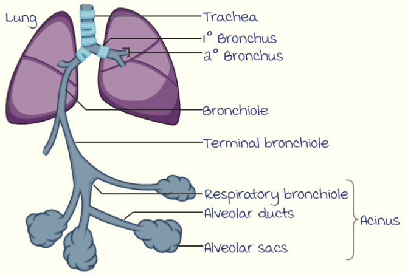
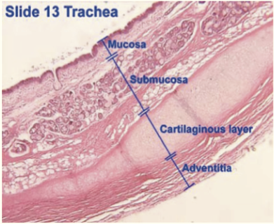
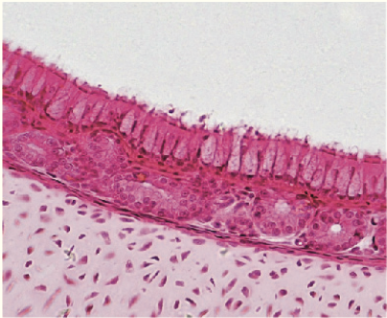
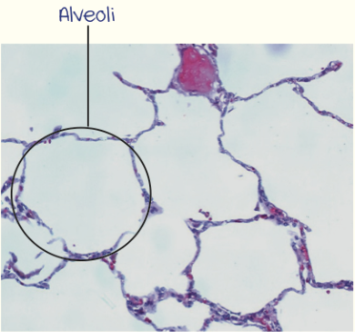
| Feature | Obstructive | Restrictive |
|---|---|---|
| FEV1 | ↓↓ | ↓ |
| FVC | Normal / ↓ | ↓↓ |
| FEV1/FVC | ↓ (< 0.7) | Normal or ↑ |
| TLC | ↑ (air trapping) | ↓ |
| DLCO | ↓ emphysema, normal bronchitis, ↑/normal asthma | ↓ in ILD; normal in extrapulmonary (chest wall, neuromuscular) |
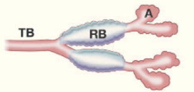
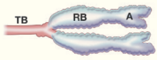
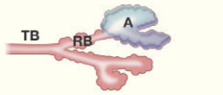
TB : Terminal bronchiole · RB : Respiratory bronchiole · A : Alveoli.
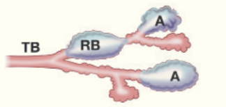
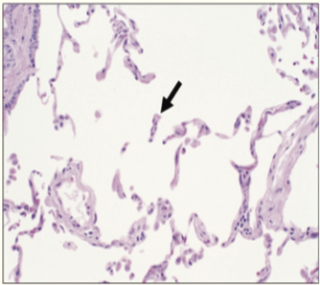
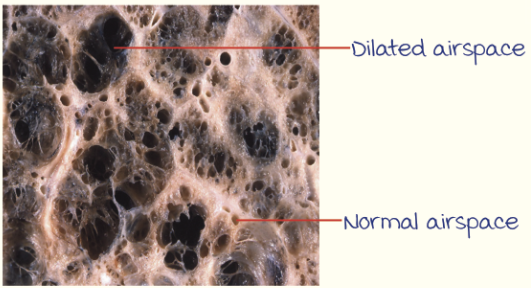
$$ $$ RI = Thickness of submucous gland layer / Thickness of wall between epithelium & cartilage = bc / ad
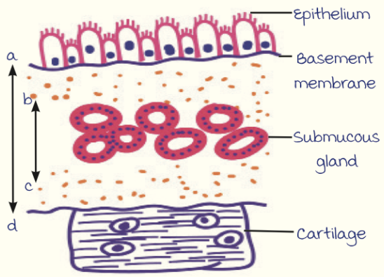
| Feature | Atopic (extrinsic) | Non-atopic (intrinsic) |
|---|---|---|
| Trigger | Environmental allergens (dust mite, pollen) | Viral infections, pollutants, aspirin, cold, exercise |
| Mechanism | Type I hypersensitivity (Th2 — IL-4, IL-5, IL-13), IgE | Not IgE-mediated; airway hyperreactivity |
| Family history | Positive (atopy) | Negative |
| Serum IgE | ↑ | Normal |
| Finding | Description |
|---|---|
| Curschmann spirals | Mucus plugs with whorled shed epithelium |
| Charcot–Leyden crystals | Crystalloids of eosinophil galectin-10 (lysophospholipase) |
| Creola bodies | Clusters of shed epithelial cells |
| Type | Organism | Features |
|---|---|---|
| Community-acquired typical | S. pneumoniae (most common), H. influenzae (COPD), Moraxella, S. aureus (post-influenza), Klebsiella (alcoholics), Pseudomonas (CF) | Lobar / bronchopneumonia |
| Atypical | Mycoplasma (most common), Chlamydophila, Legionella, viruses (influenza, RSV, SARS-CoV-2) | Interstitial pneumonia, patchy; cold agglutinins (Mycoplasma) |
| Hospital-acquired | Gram-negative (Klebsiella, Pseudomonas, E. coli), MRSA | Ventilator-associated |
| Aspiration | Anaerobes (oral flora) + aerobes | Right lower lobe (posterior segment of upper lobe / superior lower lobe when supine) — abscess |
| Stage | Time | Gross | Microscopy |
|---|---|---|---|
| Congestion | Day 1–2 | Heavy, boggy, red | Vascular engorgement, intra-alveolar fluid with few neutrophils, many bacteria |
| Red hepatization | Day 2–4 | Red, firm, airless, liver-like | Massive exudation of neutrophils, RBCs, fibrin filling alveoli |
| Grey hepatization | Day 4–8 | Greyish-brown, dry | Disintegration of RBCs, persistence of fibrinosuppurative exudate |
| Resolution | Day 8+ | — | Enzymatic digestion of exudate; macrophages; restoration |
| Feature | Lobar pneumonia | Bronchopneumonia |
|---|---|---|
| Distribution | Entire lobe, uniform | Patchy, centred on bronchioles, bilateral, basal |
| Age | Adults (20–50 y) | Extremes of age, debilitated |
| Organism | S. pneumoniae (90%), Klebsiella | Staph, Strep, H. influenzae, Pseudomonas |
Causes :
| Type | Mechanism | Example |
|---|---|---|
| Resorption (obstruction) | Complete airway obstruction → air resorbed | Mucus plug (post-operative), foreign body, tumour; mediastinum shifts toward atelectatic lung |
| Compression | Pleural cavity filled with fluid / air | Pleural effusion, pneumothorax; mediastinum shifts away |
| Contraction (cicatrization) | Local / generalized fibrosis | Irreversible |
| Patchy (microatelectasis) | Loss of surfactant | Neonatal RDS, ARDS |
| Disease | Key pathology |
|---|---|
| Idiopathic pulmonary fibrosis (UIP pattern) | Patchy interstitial fibrosis, temporal heterogeneity, fibroblastic foci, honeycombing — subpleural, lower lobes; > 50 y men, smokers; TERT, MUC5B; nintedanib, pirfenidone |
| Nonspecific interstitial pneumonia (NSIP) | Uniform (temporally homogeneous) inflammation / fibrosis; CTD-associated; better prognosis |
| Cryptogenic organizing pneumonia (BOOP) | Polypoid plugs of loose organizing connective tissue (Masson bodies) in alveolar ducts, alveoli, bronchioles; responds to steroids |
| Sarcoidosis | Non-caseating granulomas (lymphangitic distribution), bilateral hilar lymphadenopathy, asteroid & Schaumann bodies, ↑ ACE, hypercalcemia; Löfgren syndrome (erythema nodosum + BHL + arthritis); Heerfordt (uveoparotid fever); CD4:CD8 > 3.5 in BAL ; African-American women, non-smokers |
| Hypersensitivity pneumonitis | Type III + IV; farmer's lung (Saccharopolyspora / thermophilic actinomycetes), bird fancier's (pigeon), bagassosis (sugarcane), byssinosis (cotton — "Monday chest tightness"); poorly formed non-necrotizing granulomas, bronchiolocentric |
| Pulmonary eosinophilia | Loeffler (transient, parasites), tropical (microfilariae), chronic eosinophilic pneumonia, drug-induced |
| Pulmonary alveolar proteinosis | Anti-GM-CSF antibodies → defective macrophage clearance of surfactant; PAS + granular intra-alveolar material; "crazy paving" CT; whole-lung lavage |
| Langerhans cell histiocytosis (pulmonary) | Smokers, upper-lobe nodules & cysts; Birbeck granules, CD1a+ |
| Goodpasture syndrome | Anti-GBM (α3 type IV collagen) → pulmonary hemorrhage + RPGN; linear IgG; young men, smokers |
| Disease | Agent | Key pathology |
|---|---|---|
| Coal worker's pneumoconiosis | Coal dust (carbon) | Anthracosis (asymptomatic, black pigment in macrophages along lymphatics) → simple CWP (coal macules 1–2 mm, upper lobes; coal nodules) → complicated CWP / progressive massive fibrosis (> 2 cm black scars); Caplan syndrome (RA + pneumoconiosis — rheumatoid nodules) |
| Silicosis | Crystalline silica (quartz) — most common occupational disease worldwide; mining, sand-blasting, stone cutting, glass, pottery, foundry | Upper lobes; silicotic nodules — concentric "onion-skin" hyalinized collagen with birefringent particles (weakly); eggshell calcification of hilar nodes; ↑ susceptibility to TB (silica kills macrophages — inflammasome); lung cancer (IARC group 1) |
| Asbestosis | Asbestos (amphiboles — crocidolite most pathogenic; serpentine — chrysotile) — shipyard, insulation, roofing, brake linings | Lower lobes, subpleural diffuse interstitial fibrosis (UIP-like); asbestos (ferruginous) bodies — golden-brown beaded dumbbell rods, Prussian blue +; pleural plaques (most common lesion — parietal pleura, dome of diaphragm, calcified, no asbestos bodies); bronchogenic carcinoma (most common malignancy; synergistic with smoking ×55), malignant mesothelioma |
| Berylliosis | Beryllium (aerospace, electronics) | Non-caseating granulomas (sarcoid-like), type IV hypersensitivity; lung cancer |
| Byssinosis | Cotton, flax, hemp | Monday fever; not granulomatous |
| Siderosis | Iron (welders) | Benign |
| Bagassosis | Sugarcane bagasse (thermophilic actinomycetes) | Hypersensitivity pneumonitis |
| Farmer's lung | Mouldy hay (Saccharopolyspora rectivirgula) | HP |
"Upper — SCB" : Silicosis, Coal, Berylliosis (and TB, sarcoid upper/mid) · "Lower — Asbestosis" (and IPF, scleroderma).
| Type | Frequency | Key features |
|---|---|---|
| Adenocarcinoma | Most common overall (~40%); most common in women, non-smokers, young | Peripheral; glandular, mucin; TTF-1, Napsin A +; mutations : EGFR (Asian non-smoking women), ALK (EML4-ALK), ROS1, KRAS (smokers), BRAF, MET, RET; scar carcinoma; adenocarcinoma in situ (lepidic, < 3 cm, formerly BAC) |
| Squamous cell carcinoma | ~25–30%; strongest smoking association (with SCLC); men | Central (hilar); keratin pearls, intercellular bridges; p40, p63, CK5/6 +; cavitation, PTHrP → hypercalcemia; SOX2, FGFR1 amplification, TP53, CDKN2A; arises from squamous metaplasia → dysplasia → CIS |
| Small cell carcinoma (SCLC) | ~15%; almost exclusively smokers | Central; small round blue cells, scant cytoplasm, nuclear molding, salt-and-pepper chromatin, no nucleoli, crush artifact (Azzopardi effect), high mitotic rate; neuroendocrine (chromogranin, synaptophysin, CD56, INSM1); TP53 + RB1 loss (nearly 100%), L-MYC; most aggressive, early metastasis; ectopic ACTH, ADH, Lambert–Eaton; chemo-radiosensitive, not surgical |
| Large cell carcinoma | ~10% | Undifferentiated, diagnosis of exclusion; large cells, prominent nucleoli; gynecomastia (hCG) |
| Carcinoid tumour | 1–5% | Low-grade neuroendocrine; young (< 40 y), not smoking-related; central bronchus — polypoid "collar-button / mushroom" lesion; organoid / trabecular nests, salt-and-pepper chromatin; carcinoid syndrome rare; typical (< 2 mitoses/2 mm²) vs atypical |
| Syndrome | Mechanism |
|---|---|
| Pancoast (superior sulcus) tumour | Apical tumour → Horner syndrome (ptosis, miosis, anhidrosis — cervical sympathetic chain), C8–T1 brachial plexus (ulnar pain), rib destruction |
| Superior vena cava syndrome | SCLC (most common cause) — facial swelling, dilated neck veins |
| Recurrent laryngeal nerve | Hoarseness (left) |
| Phrenic nerve | Diaphragmatic paralysis |
| Pericardial / pleural | Effusion (malignant, hemorrhagic) |